คู่มือการใช้งานระบบ Intranet
Prime Power Group
ฉบับผู้ใช้งานและอบรมพนักงานใหม่ — อธิบายทุกเมนู พร้อมตัวอย่างงานจริงทีละขั้นตอน
★เริ่มต้น: ระบบนี้คืออะไร
Intranet คือเว็บไซต์ภายในบริษัท ใช้ยื่นคำขอแทนกระดาษ ติดตามการอนุมัติ ค้นหาเอกสาร และดูข้อมูลบุคลากรได้ในที่เดียว
ระบบนี้ใช้ทำอะไรได้บ้าง
| เมนู | ใช้ทำอะไร | ใครใช้ |
|---|---|---|
| หน้าแรก | ภาพรวมความคืบหน้าโครงการ แบบฟอร์มที่ใช้บ่อย ข่าวประกาศ คู่มือ และคิว Messenger วันนี้ | ทุกคน |
| นโยบายบริษัท | อ่านนโยบายและระเบียบที่บังคับใช้ปัจจุบัน | ทุกคน |
| แบบฟอร์มทั้งหมด | ยื่นคำขอออนไลน์ เช่น เบิกเงิน เบิกสวัสดิการ ขอใช้รถ แจ้งซ่อม Memo | ทุกคน |
| ติดตามสถานะ | ดูว่าคำขอของเราถึงขั้นไหน · ผู้อนุมัติ ใช้อนุมัติคำขอของคนอื่น | ทุกคน / ผู้อนุมัติ |
| จองห้องประชุม | ดูตารางห้องว่างและจองห้อง ระบบสร้างนัดหมายใน Outlook ให้ | ทุกคน |
| เอกสาร/คู่มือ | คู่มือปฏิบัติงาน เอกสาร ISO และไฟล์ดาวน์โหลด | ทุกคน |
| ประเมินผลบุคลากร | ประเมินทดลองงาน/ประจำปี ลงนามรับทราบผล ดูประวัติการประเมิน | ทุกคน / หัวหน้า / HR |
| รายงาน | สรุปจำนวนคำขอ ระยะเวลาอนุมัติ และงานค้าง | หัวหน้า / ผู้บริหาร |
| บุคลากร | ค้นหาเบอร์ภายใน อีเมล และดูแผนผังองค์กร | ทุกคน |
| ติดต่อ | สมุดโทรศัพท์ภายใน ติดต่อผู้ดูแลระบบ และกล่องรับฟังความคิดเห็น | ทุกคน |
สิ่งที่ต้องมีก่อนใช้งาน
- บัญชีอีเมลบริษัท ที่ลงท้ายด้วย
@primepower.co.th(รหัสผ่านเดียวกับ Outlook / Teams) — ถ้ายังไม่มี ติดต่อฝ่ายทรัพยากรบุคคล - เบราว์เซอร์ Microsoft Edge หรือ Google Chrome รุ่นล่าสุด (ใช้บนมือถือได้ทั้ง iPhone และ Android)
- ข้อมูลของคุณในหน้าบุคลากร ต้องถูกต้อง เช่น ฝ่าย แผนก หัวหน้า เพราะระบบใช้ส่งคำขอไปหาผู้อนุมัติที่ถูกคน — ถ้าผิด แจ้ง HR
ตัวละครในตัวอย่างของคู่มือนี้
ภาพประกอบทั้งหมดถ่ายจากระบบจริง แต่ใช้ข้อมูลตัวอย่าง (ชื่อบุคคลและตัวเลขสมมติ) เพื่อเล่าเรื่องงานหนึ่งชิ้นตั้งแต่ต้นจนจบ
วิธีอ่านภาพในคู่มือ
ในภาพหน้าจอจะมี กรอบสีส้มพร้อมตัวเลข ชี้จุดที่ต้องดูหรือกด ตัวเลขตรงกับคำอธิบายใต้ภาพ · กดที่ภาพเพื่อขยายเต็มจอ
1เข้าสู่ระบบ / ออกจากระบบ
ใช้บัญชี Microsoft 365 ของบริษัท ไม่ต้องจำรหัสผ่านใหม่
เข้าสู่ระบบ
- เปิดเบราว์เซอร์ ไปที่ https://ppg2014.github.io/prime-power-intranet/ (แนะนำให้กดดาว ⭐ บันทึกไว้ หรือปักหมุดไว้ที่แถบงาน)
- กดปุ่ม เข้าสู่ระบบด้วยบัญชี Microsoft 365
- ระบบพาไปหน้าของ Microsoft ให้ใส่อีเมลบริษัทและรหัสผ่าน (เหมือนเข้า Outlook) — ถ้าเคยเข้า Outlook/Teams บนเครื่องนี้แล้ว อาจเข้าได้ทันทีโดยไม่ต้องพิมพ์
- ถ้าเป็นการเข้าครั้งแรก Microsoft อาจถามว่าอนุญาตให้แอปเข้าถึงข้อมูลหรือไม่ ให้กด Accept / ยอมรับ
- เข้าสู่ระบบสำเร็จจะเห็นหน้าแรก และชื่อของคุณที่มุมขวาบน
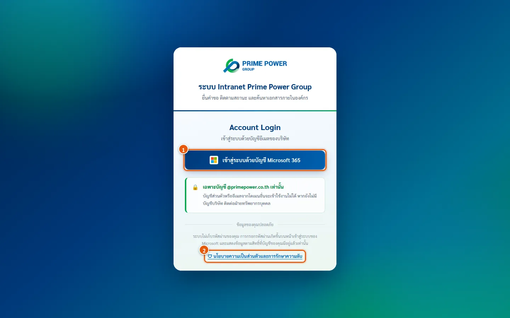
- 1ปุ่มเข้าสู่ระบบด้วยบัญชี Microsoft 365
- 2ลิงก์อ่านนโยบายความเป็นส่วนตัวและการรักษาความลับ (PDPA)
ใช้ได้เฉพาะบัญชี @primepower.co.th — อีเมลส่วนตัว (Gmail, Hotmail) จะเข้าไม่ได้ ระบบไม่เก็บรหัสผ่านของคุณ การพิมพ์รหัสผ่านเกิดขึ้นบนหน้าของ Microsoft เท่านั้น
นโยบายความเป็นส่วนตัว (PDPA)
พนักงานใหม่ควรอ่านนโยบายนี้ก่อนเริ่มใช้งาน ข้อมูลในระบบเป็นข้อมูลภายในบริษัท ห้ามคัดลอกหรือส่งต่อให้บุคคลภายนอก
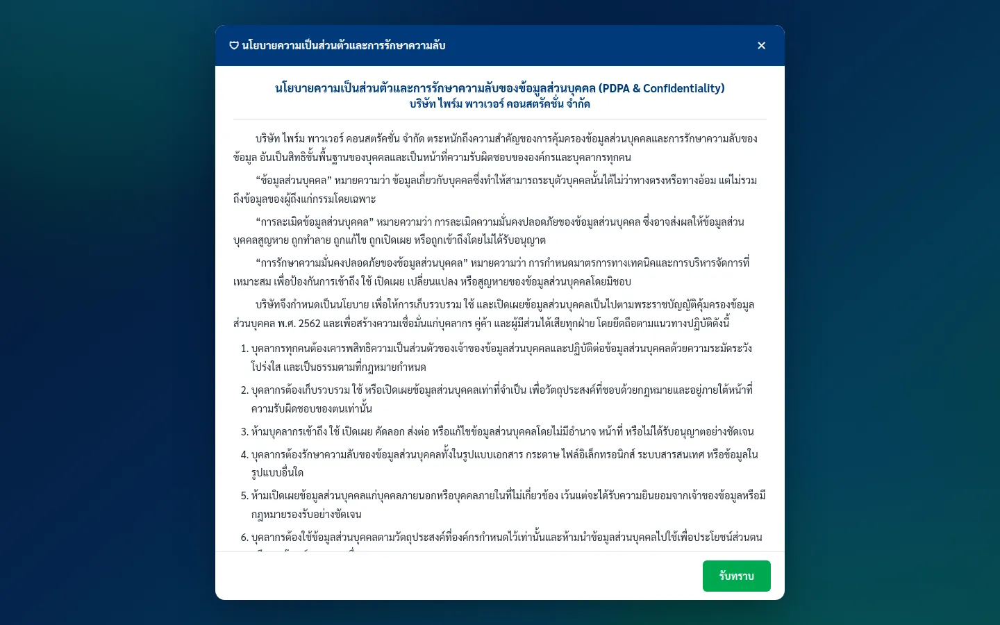
ประกาศ Popup หลังเข้าสู่ระบบ
ถ้ามีประกาศสำคัญ (เช่น วันหยุดประจำปี) จะเด้งขึ้นกลางจอหลังเข้าสู่ระบบ
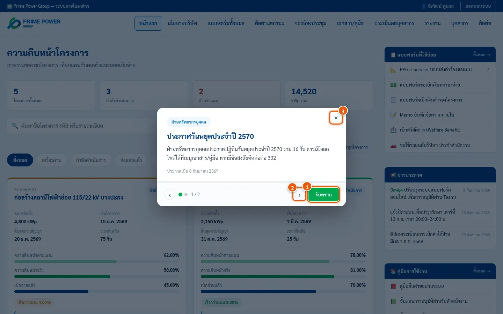
- 1รับทราบ ปิดประกาศ
- 2ลูกศรเลื่อนดูประกาศถัดไป (ถ้ามีหลายเรื่อง ตัวเลข 1/2 บอกลำดับ)
- 3ปุ่ม ✕ ปิดหน้าต่าง
ออกจากระบบ
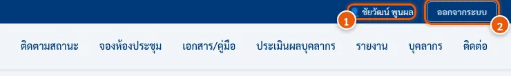
- 1ชื่อบัญชีที่กำลังใช้งาน — ตรวจให้แน่ใจว่าเป็นชื่อของคุณ
- 2ออกจากระบบ — กดทุกครั้งเมื่อใช้เครื่องส่วนกลางหรือเครื่องของคนอื่น
ออกจากระบบอัตโนมัติ: ถ้าไม่ได้ใช้งานนาน 60 นาที ระบบจะออกจากระบบให้เอง เพื่อความปลอดภัย ก่อนครบเวลา 2 นาทีจะมีแถบเตือนพร้อมนับถอยหลัง กด ใช้งานต่อ เพื่อต่อเวลา
2หน้าแรกและเมนู
หน้าแรกรวมสิ่งที่ใช้บ่อยไว้ เปิดมาก็เห็นภาพรวมงานของบริษัทและทางลัดไปยังแบบฟอร์ม
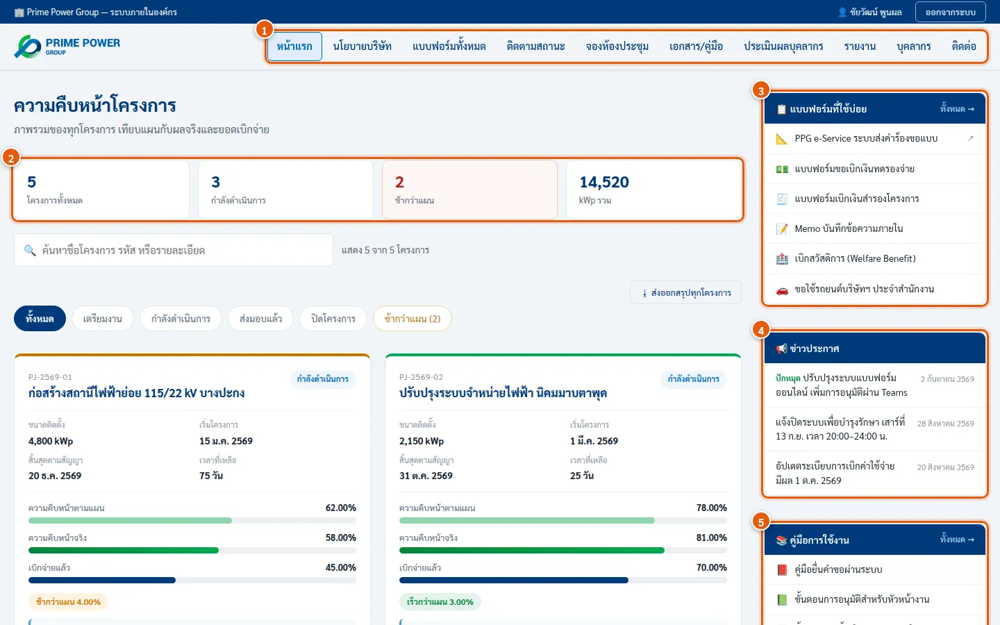
- 1เมนูหลัก — กดเพื่อไปยังแต่ละส่วน ตัวเลขวงกลมสีแดงบนเมนูคืองานที่รอคุณ
- 2ภาพรวมโครงการ — จำนวนโครงการทั้งหมด กำลังดำเนินการ ล่าช้ากว่าแผน และกำลังการผลิตรวม (kWp) · เลื่อนลงดูการ์ดของแต่ละโครงการ
- 3แบบฟอร์มที่ใช้บ่อย — กดชื่อฟอร์มเพื่อไปหน้ากรอกได้ทันที
- 4ข่าวประกาศ — กดหัวข้อเพื่ออ่านรายละเอียดและดูรูป/ไฟล์แนบ
- 5คู่มือการใช้งาน — คู่มือปฏิบัติงานของแต่ละฝ่าย
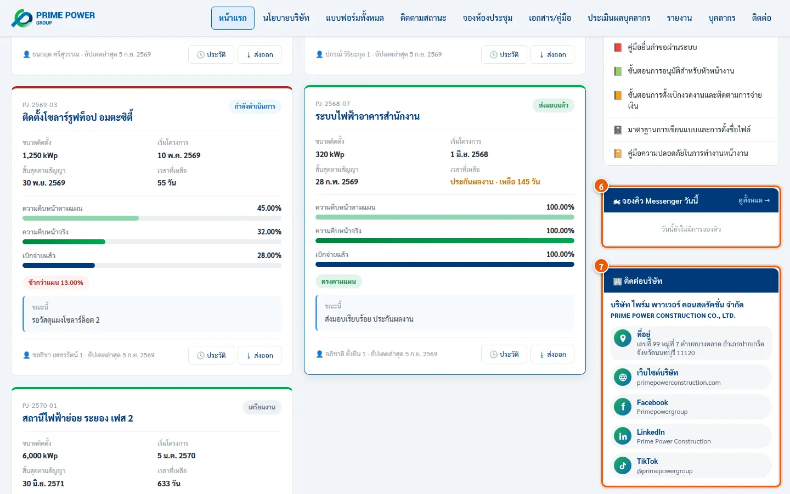
- 6จองคิว Messenger วันนี้ — ดูว่าวันนี้มีใครจองคิวส่งเอกสารไว้เวลาไหน กด ดูทั้งหมด → เพื่อดูปฏิทินคิวทั้งเดือน
- 7ติดต่อบริษัท — ที่อยู่ เว็บไซต์ และโซเชียลมีเดียของบริษัท
ตัวเลขแจ้งเตือนสีแดงบนเมนู
| เมนู | ตัวเลขหมายถึง |
|---|---|
| ติดตามสถานะ | คำขอที่ถึงคิวคุณอนุมัติ + คำขอของคุณที่มีความเคลื่อนไหวแต่ยังไม่ได้เปิดดู (เช่น อนุมัติแล้ว ถูกส่งกลับ) |
| ประเมินผลบุคลากร | ใบประเมินที่รอคุณทำ เช่น รอคุณประเมินลูกทีม หรือรอคุณลงนามรับทราบ |
ตัวเลขอัปเดตเองทุกประมาณ 5 นาที ถ้าอยากเห็นทันทีให้กด F5 เพื่อรีเฟรชหน้า
3นโยบายบริษัท
รวมนโยบายและระเบียบปฏิบัติฉบับที่บังคับใช้ปัจจุบัน พนักงานใหม่ควรอ่านให้ครบทุกฉบับในสัปดาห์แรก
- กดเมนู นโยบายบริษัท
- กดชื่อเอกสาร หรือปุ่ม เปิดอ่าน ท้ายแถว
- หน้าต่างจะแสดงเลขที่เอกสาร ฉบับที่ วันที่ประกาศ เนื้อหา และไฟล์แนบ (รูปภาพแสดงในหน้าต่างเลย ไฟล์ PDF กดเพื่อเปิด)
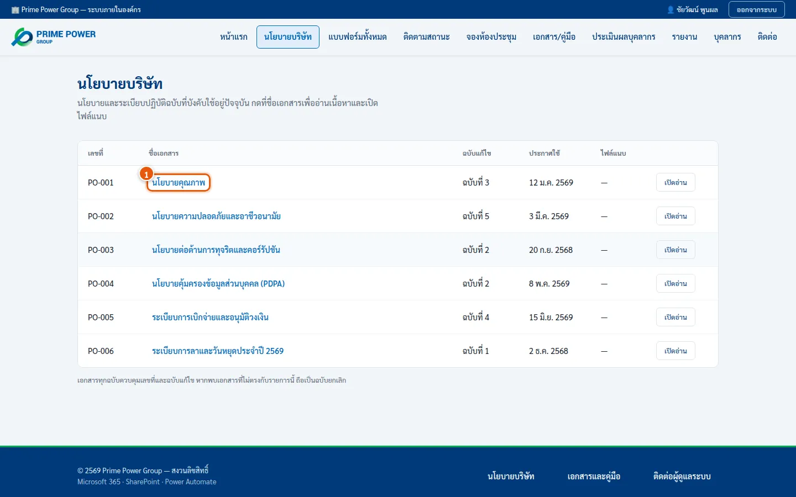
- 1กดชื่อนโยบายเพื่อเปิดอ่าน
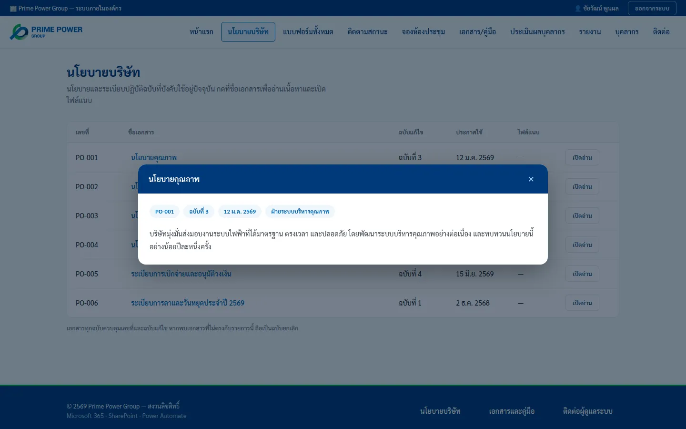
4ยื่นคำขอผ่านแบบฟอร์ม
ทุกคำขอที่เคยเป็นกระดาษ ยื่นผ่านหน้านี้ ระบบส่งต่อให้ผู้อนุมัติตามลำดับเอง และแจ้งเตือนผ่าน Teams
หาแบบฟอร์มที่ต้องการ
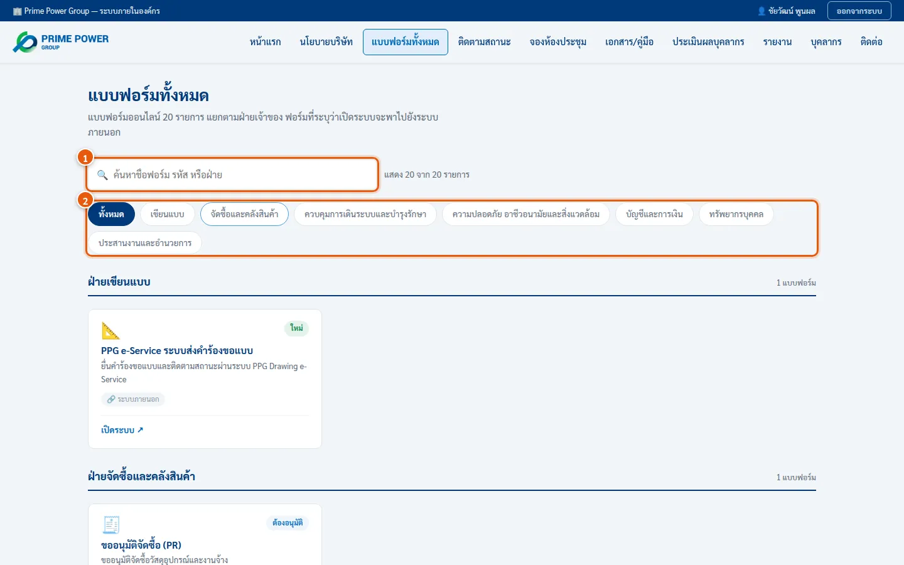
- 1ช่องค้นหา — พิมพ์ชื่อฟอร์ม รหัส หรือชื่อฝ่าย
- 2ปุ่มกรองตามฝ่ายเจ้าของแบบฟอร์ม
- 3การ์ดแบบฟอร์ม — ป้าย ใช้บ่อย ต้องอนุมัติ ใหม่ และเวลาโดยประมาณที่ใช้กรอก
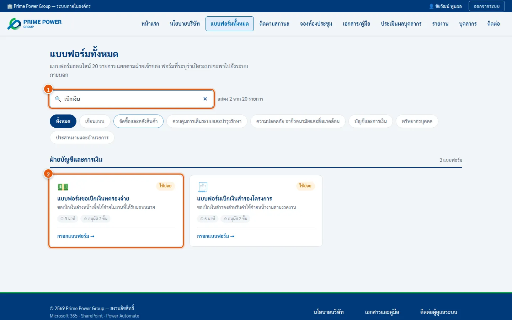
- 1คำค้น
- 2กดการ์ดเพื่อเปิดหน้ากรอก
การ์ดที่เขียนว่า “เปิดระบบ ↗” คือระบบภายนอก เช่น PPG e-Service จะเปิดในแท็บใหม่
ตัวอย่างงานจริง: ขอเบิกเงินทดรองจ่าย 12,500 บาท
สถานการณ์
คุณชัยวัฒน์ต้องซื้อสายไฟและอุปกรณ์ยึดรางเคเบิลเพิ่มสำหรับติดตั้งตู้ MDB หน้างานโครงการบางปะกง ราคา 12,500 บาท จึงขอเบิกเงินทดรองจ่ายล่วงหน้า โดยแนบใบเสนอราคาประกอบ
- เมนู แบบฟอร์มทั้งหมด → กดการ์ด แบบฟอร์มขอเบิกเงินทดรองจ่าย
- ตรวจส่วน ข้อมูลผู้ยื่น — ระบบดึงรหัสพนักงาน ชื่อ อีเมล ฝ่าย แผนก มาใส่ให้เอง (ช่องสีเทาแก้ไม่ได้) ถ้าข้อมูลผิดให้แจ้ง HR
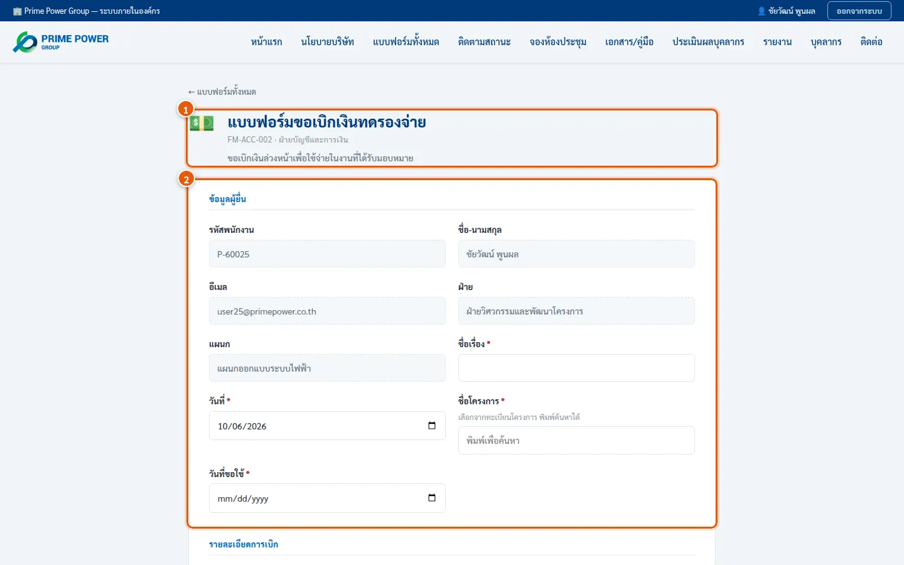
- 1ชื่อแบบฟอร์ม รหัส และฝ่ายเจ้าของ
- 2ข้อมูลผู้ยื่นที่ระบบใส่ให้อัตโนมัติ
- กรอก ชื่อเรื่อง ให้สั้นและสื่อความ เช่น “ขอเบิกเงินทดรองจ่ายค่าวัสดุติดตั้งหน้างาน”
- วันที่ ระบบใส่วันนี้ให้ · ชื่อโครงการ พิมพ์บางคำ เช่น “บางปะกง” แล้วเลือกจากรายการ · วันที่ขอใช้ เลือกวันที่ต้องใช้เงิน
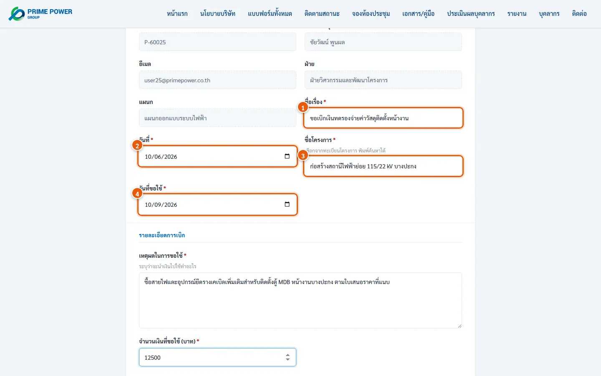
- 1ชื่อเรื่อง
- 2วันที่ยื่น
- 3ชื่อโครงการ (เลือกจากทะเบียนโครงการ)
- 4วันที่ขอใช้เงิน
- กรอก เหตุผลในการขอใช้ ให้ละเอียด — ซื้ออะไร ใช้ที่ไหน ทำไมต้องใช้ ผู้อนุมัติจะได้ไม่ต้องถามกลับ
- กรอก จำนวนเงิน เป็นตัวเลขอย่างเดียว ไม่ต้องใส่จุลภาคหรือคำว่าบาท (เช่น 12500)
- กด + แนบไฟล์ แล้วเลือกใบเสนอราคา/ใบเสร็จ (สูงสุด 5 ไฟล์ ไฟล์ละไม่เกิน 10 MB รองรับรูปภาพและ PDF ถ่ายจากมือถือได้เลย)
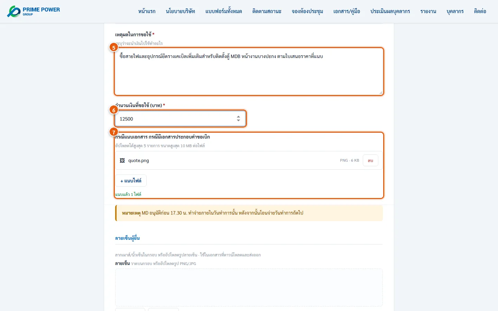
- 5เหตุผลในการขอใช้
- 6จำนวนเงิน (บาท)
- 7ไฟล์แนบ — แนบแล้วจะเห็นชื่อไฟล์ ขนาด และปุ่ม “ลบ”
- อ่าน หมายเหตุ กรอบสีเหลือง (ถ้ามี) — เช่น เงื่อนไขเวลาตัดรอบจ่ายเงิน
- ลงลายเซ็น — ลากเมาส์หรือใช้นิ้วเซ็นในกรอบ หรือกด อัปโหลดรูป ลายเซ็นที่สแกนไว้ · เซ็นผิดกด ล้างลายเซ็น
- (ไม่บังคับ) ⭳ ดาวน์โหลดแบบฟอร์ม — ดูตัวอย่างเอกสารก่อนส่ง
- กด ส่งคำขอ
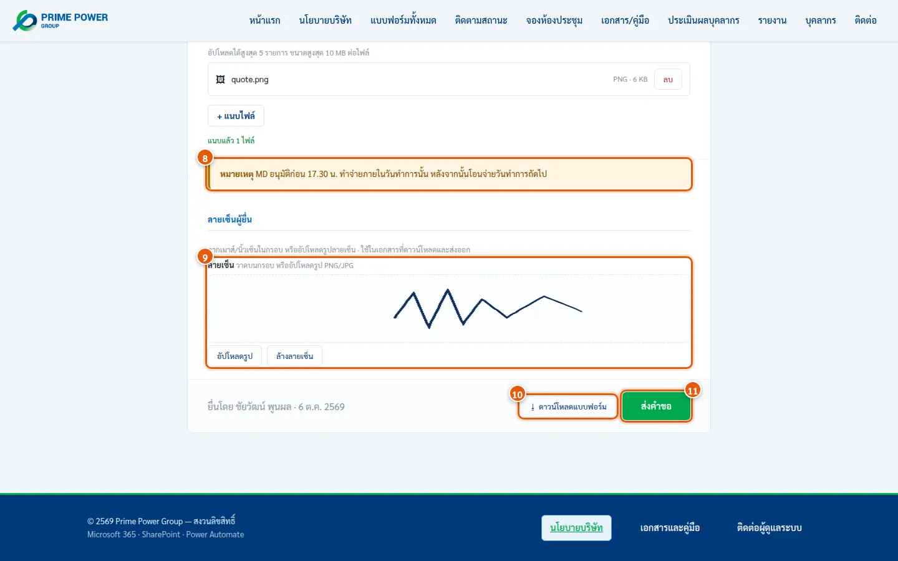
- 8หมายเหตุสำคัญของแบบฟอร์ม
- 9กรอบลายเซ็นผู้ยื่น
- 10ดาวน์โหลดแบบฟอร์มเป็นเอกสาร
- 11ปุ่มส่งคำขอ
- หน้าต่าง ตรวจทานก่อนส่งคำขอ จะสรุปข้อมูลทั้งหมด ตรวจให้ครบ — ถ้าผิดกด ← กลับไปแก้ไข ถ้าถูกต้องกด ยืนยันส่งคำขอ
- ระบบแสดง “ส่งคำขอเรียบร้อย” พร้อมเลขที่คำขอ เช่น FM-ACC-002-001-2026 — จดเลขนี้ไว้อ้างอิงได้
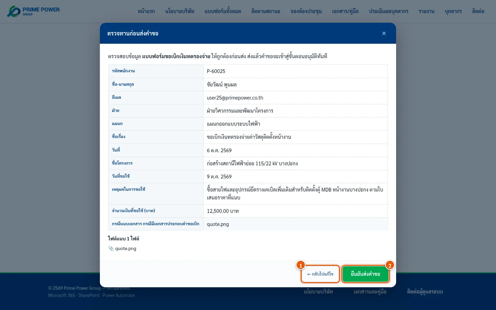
- 1กลับไปแก้ไข
- 2ยืนยันส่งคำขอ
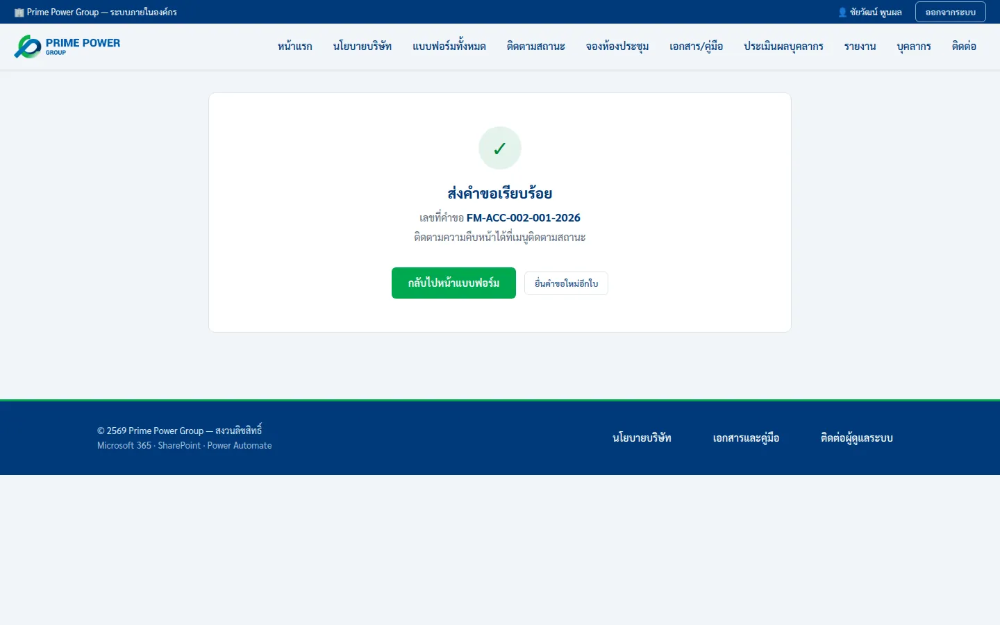
หลังกดส่ง เกิดอะไรขึ้นบ้าง
- ระบบหาผู้อนุมัติลำดับแรกให้เอง (ในตัวอย่างคือผู้บังคับบัญชาของผู้ยื่น — คุณธีรพงศ์)
- ผู้อนุมัติได้รับการ์ดขออนุมัติใน Microsoft Teams → Approvals และเห็นตัวเลขแดงบนเมนูติดตามสถานะ
- ลำดับถัดไปจะได้รับการ์ดเมื่อลำดับก่อนหน้าอนุมัติแล้วเท่านั้น
ช่องที่มี * สีแดงต้องกรอก ถ้าเว้นว่าง ระบบจะไม่ให้ส่ง และขึ้นข้อความสีแดง “กรอกข้อมูลให้ครบก่อนส่ง · ยังขาด: …” บอกชื่อช่องที่ยังไม่ได้กรอก
5ติดตามสถานะคำขอ
ดูได้ตลอดว่าคำขอของคุณถึงใครแล้ว ใครอนุมัติเมื่อไร และมีความเห็นอะไร
- กดเมนู ติดตามสถานะ — กล่อง คำขอของฉัน แสดงคำขอที่คุณยื่น พร้อมสถานะและผู้ที่รออยู่
- กดที่คำขอเพื่อเปิดรายละเอียด
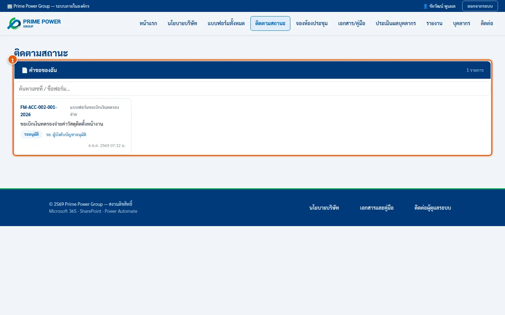
- 1คำขอของฉัน (ค้นหาด้วยเลขที่หรือชื่อฟอร์มได้)
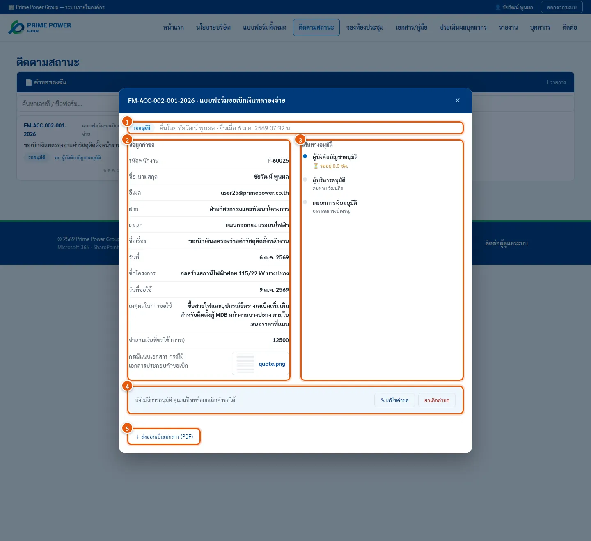
- 1สถานะปัจจุบัน ผู้ยื่น และเวลายื่น
- 2ข้อมูลที่กรอก — ไฟล์แนบกดเปิดดูได้
- 3เส้นทางอนุมัติ — จุดเขียว = ผ่านแล้ว · จุดน้ำเงินกระพริบ = กำลังรอ (บอกว่ารอมานานเท่าไร) · จุดเทา = ยังไม่ถึง
- 4ปุ่มแก้ไข/ยกเลิกคำขอ (ใช้ได้เฉพาะตอนที่ยังไม่มีใครอนุมัติ)
- 5ส่งออกเป็นเอกสาร PDF
ความหมายของสถานะ
| สถานะ | ความหมาย | ต้องทำอะไร |
|---|---|---|
| รออนุมัติ | อยู่ระหว่างรอผู้อนุมัติลำดับใดลำดับหนึ่ง | รอ · ถ้าค้างนาน ติดต่อผู้อนุมัติที่แสดงในเส้นทาง |
| ส่งกลับแก้ไข | ผู้อนุมัติขอให้แก้ไขหรือเพิ่มข้อมูล | อ่านเหตุผล แก้ไข แล้วยื่นใหม่ (บทที่ 6) |
| ไม่อนุมัติ | คำขอถูกปฏิเสธ จบการพิจารณา | อ่านเหตุผล ถ้าจำเป็นให้ยื่นคำขอใหม่ |
| อนุมัติแล้ว | ผ่านครบทุกลำดับ | ดำเนินการตามที่ขอ / รอฝ่ายที่เกี่ยวข้อง |
| เสร็จสิ้น | ปิดงานแล้ว เช่น การเงินโอนเงินและแนบสลิปแล้ว | ตรวจสลิป/ส่งออกเอกสารเก็บไว้ |
| ยกเลิก | ผู้ยื่นยกเลิกเอง | — |
ตัวอย่างต่อ: คำขอได้รับอนุมัติและโอนเงินแล้ว
เมื่อทุกลำดับอนุมัติ และการเงินโอนเงินแล้ว คุณชัยวัฒน์จะได้รับข้อความใน Teams พร้อมรูปสลิป และเห็นตัวเลขแดงบนเมนู พร้อมป้าย ใหม่ ที่คำขอ
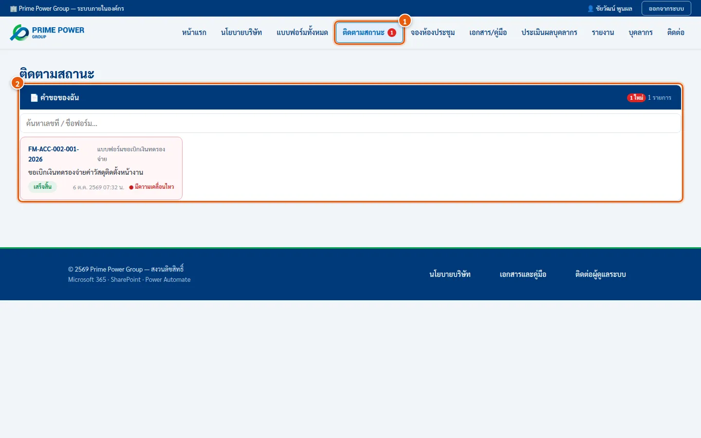
- 1ตัวเลขแดงบนเมนูติดตามสถานะ
- 2คำขอที่มีความเคลื่อนไหวจะมีกรอบสีแดงอ่อนและข้อความ “● มีความเคลื่อนไหว” — เปิดดูแล้วป้ายจะหายไป
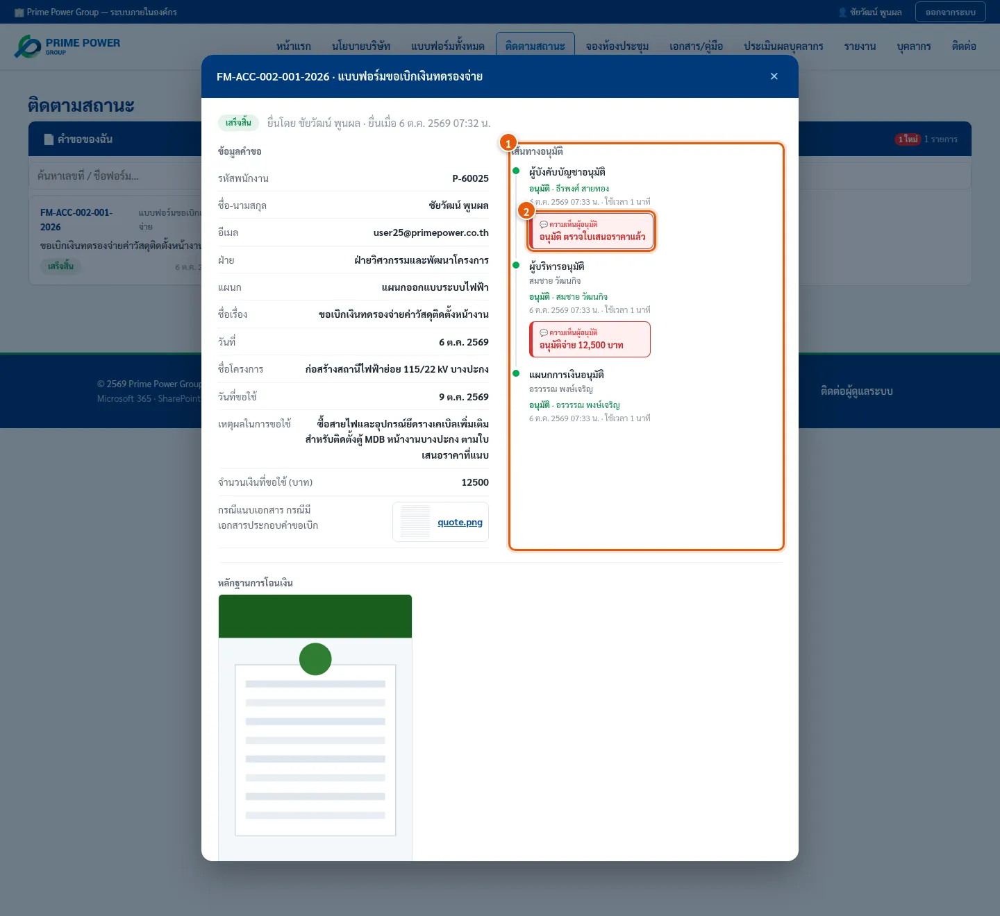
- 1ทุกลำดับเป็นจุดเขียว พร้อมชื่อผู้อนุมัติ วันเวลา และเวลาที่ใช้
- 2ความเห็นผู้อนุมัติแสดงในกรอบสีแดงให้เห็นชัด — อ่านทุกครั้ง เช่น อาจอนุมัติไม่เต็มจำนวน
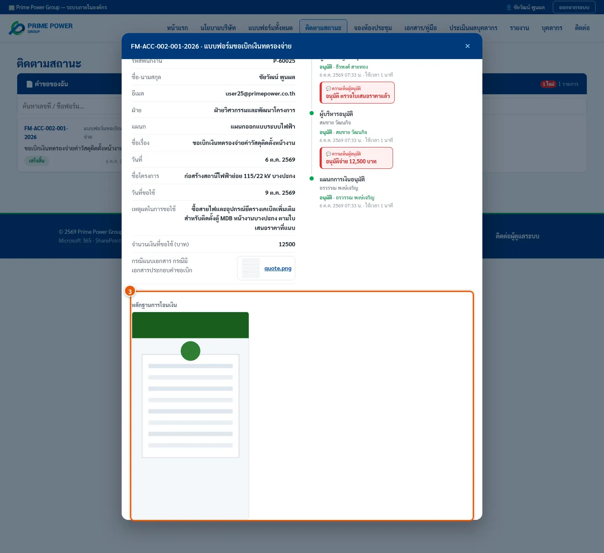
- 3หลักฐานการโอนเงิน ที่การเงินแนบไว้ กดที่รูปเพื่อดูขนาดเต็ม
6ถูกส่งกลับแก้ไข / ยกเลิกคำขอ
สถานการณ์
คุณชัยวัฒน์ยื่นขอเบิกค่าเช่ารถเครน 8,000 บาท แต่ไม่ได้แนบใบเสนอราคา ผู้จัดการแผนกจึงส่งกลับแก้ไข พร้อมเหตุผล “กรุณาแนบใบเสนอราคารถเครนอย่างน้อย 2 เจ้า และระบุเวลาที่ใช้งาน”
- เปิดคำขอจากเมนู ติดตามสถานะ — สถานะเป็น ส่งกลับแก้ไข
- อ่านเหตุผลในกรอบสีแดงที่เส้นทางอนุมัติ และกล่องสีเหลืองด้านล่าง
- กด ✎ แก้ไขและยื่นใหม่ — ระบบเปิดแบบฟอร์มเดิมพร้อมข้อมูลที่เคยกรอก มีป้าย แก้ไข ที่ชื่อฟอร์ม
- แก้ไข/แนบไฟล์เพิ่มตามที่ขอ แล้วกด ส่งคำขอ — คำขอจะเริ่มอนุมัติใหม่จากลำดับแรก โดยใช้เลขที่เดิม
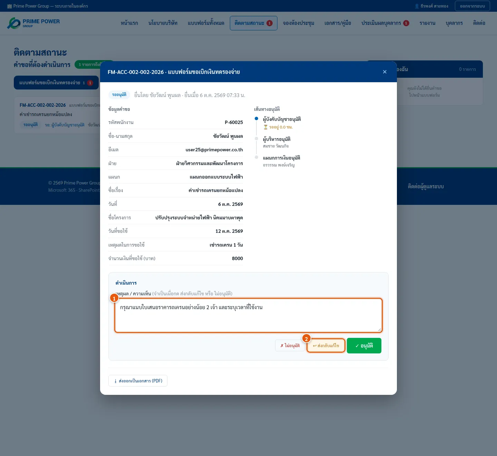
- 1พิมพ์เหตุผลที่ต้องแก้
- 2กด ↩ ส่งกลับแก้ไข
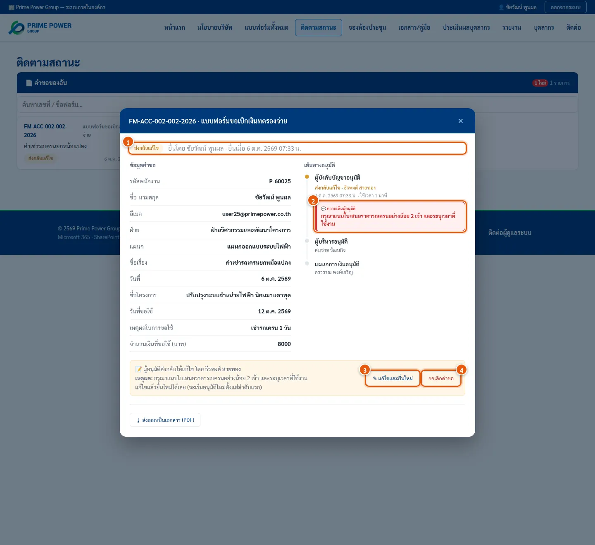
- 1สถานะส่งกลับแก้ไข
- 2เหตุผลจากผู้อนุมัติ
- 3แก้ไขและยื่นใหม่
- 4ยกเลิกคำขอ
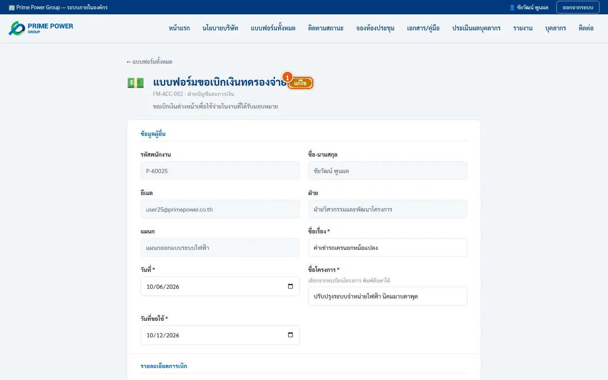
- 1ป้าย “แก้ไข” — ข้อมูลเดิมถูกใส่ไว้ให้แล้ว
- 2แก้ช่องที่ผู้อนุมัติขอ
ยกเลิกคำขอ / แก้ไขก่อนมีคนอนุมัติ
- ถ้ายังไม่มีใครอนุมัติ จะมีปุ่ม ✎ แก้ไขคำขอ และ ยกเลิกคำขอ ในหน้าต่างรายละเอียด
- เมื่อมีผู้อนุมัติดำเนินการไปแล้ว จะแก้ไขเองไม่ได้ — ให้ติดต่อผู้อนุมัติเพื่อขอให้ส่งกลับแก้ไข
- การยกเลิกเป็นการถาวร ต้องยื่นใหม่ถ้าต้องการขออีกครั้ง
7ส่งออกเอกสาร PDF
พิมพ์หรือบันทึกคำขอเป็นเอกสารที่มีหัวกระดาษบริษัท ข้อมูลครบ และลายเซ็น/ผลการอนุมัติจากระบบ
- เปิดคำขอ → กด ⭳ ส่งออกเป็นเอกสาร (PDF)
- ถ้ายังไม่มีลายเซ็นหรืออยากเปลี่ยน เปิดหัวข้อ ✍ ลายเซ็นผู้ยื่น เซ็นแล้วกด ใส่ลายเซ็นนี้ในเอกสาร — ลายเซ็นขึ้นในเอกสารทันที
- กด พิมพ์ / บันทึกเป็น PDF → อ่านข้อความแจ้งเรื่องเอกสารอิเล็กทรอนิกส์ → ในหน้าต่างพิมพ์ เลือกเครื่องพิมพ์ หรือเลือก Save as PDF / บันทึกเป็น PDF
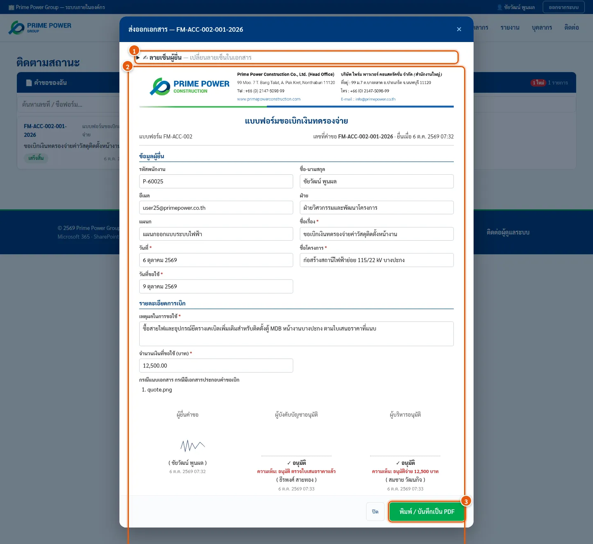
- 1ลายเซ็นผู้ยื่น (เปลี่ยนได้)
- 2ตัวอย่างเอกสาร — ช่องลงนามผู้อนุมัติแสดงผล “✓ อนุมัติ” ความเห็น ชื่อ และเวลาจากระบบ
- 3พิมพ์ / บันทึกเป็น PDF
แบบฟอร์มบางชนิดมีหน้าตาตามต้นฉบับ ISO โดยเฉพาะ เช่น ใบขอสั่งซื้อ (PR), บันทึกข้อความภายใน (Memo), เบิกค่าใช้จ่ายในการเดินทาง, ใบรับรองแทนใบเสร็จ — เอกสารที่ส่งออกจะเหมือนแบบฟอร์มกระดาษเดิม
8อนุมัติคำขอ (สำหรับหัวหน้าและผู้อนุมัติ)
อนุมัติได้ 2 ช่องทาง: ในเว็บ Intranet (บทนี้) หรือในแอป Teams (บทที่ 9) ผลเหมือนกัน ใช้ช่องทางใดช่องทางหนึ่ง
- เมื่อมีคำขอถึงคิวคุณ จะเห็นตัวเลขแดงที่เมนู ติดตามสถานะ → กดเข้าไป
- ส่วน คำขอที่ต้องดำเนินการ จะแสดงคำขอที่รอคุณ (มีป้าย ถึงคิวคุณ) — กดเพื่อเปิด
- อ่านข้อมูล เปิดไฟล์แนบตรวจสอบ
- พิมพ์ เหตุผล/ความเห็น (จำเป็นเมื่อส่งกลับหรือไม่อนุมัติ — ถ้าอนุมัติจะเว้นว่างก็ได้)
- เลือกกดปุ่มใดปุ่มหนึ่ง
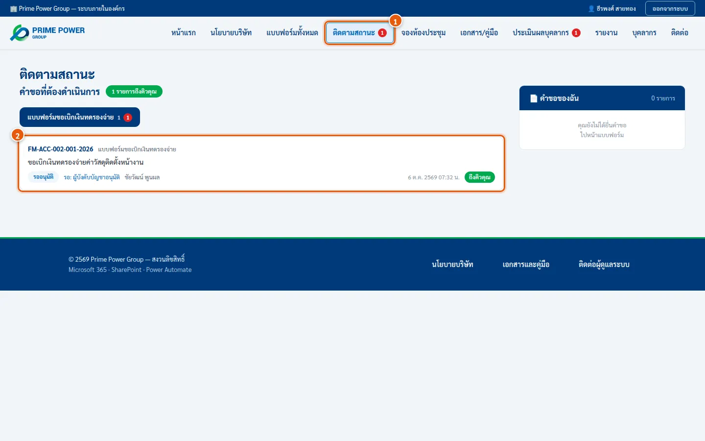
- 1ตัวเลขงานที่รอคุณ
- 2คำขอที่ถึงคิวคุณอนุมัติ — กดเพื่อเปิด
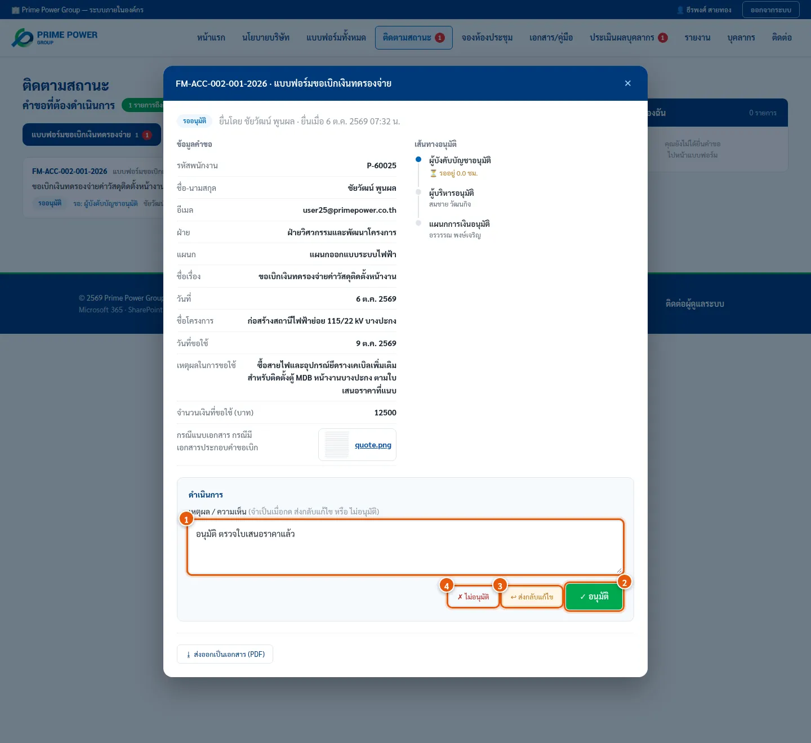
- 1ช่องความเห็น — ข้อความนี้จะแสดงเป็นกรอบแดงให้ผู้ยื่นเห็น
- 2✓ อนุมัติ — ส่งต่อให้ลำดับถัดไป (หรือจบงานถ้าเป็นลำดับสุดท้าย)
- 3↩ ส่งกลับแก้ไข — คืนให้ผู้ยื่นแก้ แล้วเริ่มอนุมัติใหม่
- 4✗ ไม่อนุมัติ — ปฏิเสธและจบคำขอ
ตัวอย่างความเห็นที่ดี
- อนุมัติ: “อนุมัติ ตรวจใบเสนอราคาแล้ว” · “อนุมัติจ่าย 12,500 บาท”
- ส่งกลับ: “กรุณาแนบใบเสนอราคาอย่างน้อย 2 เจ้า และระบุเวลาที่ใช้งาน”
- ไม่อนุมัติ: “งบโครงการนี้ใช้ครบแล้ว ให้เบิกผ่านงบส่วนกลางแทน”
ผู้อนุมัติลำดับสุดท้ายมีกรอบ ✍ ลายเซ็นผู้อนุมัติ เพิ่ม — ลายเซ็นนี้ใช้ในเอกสารที่ส่งออก (ถ้าไม่เซ็นจะใช้ลายเซ็นในทะเบียนบุคลากร)
ถ้าคำขอกำหนดให้ “ต้องอนุมัติครบทุกคน” ในลำดับเดียวกัน ลำดับนั้นจะผ่านเมื่อทุกคนกดอนุมัติแล้ว
ถ้ากดแล้วขึ้นข้อความว่า “มีคนดำเนินการไปแล้ว” แปลว่ามีผู้อนุมัติอีกคนหรือคุณเองกดผ่าน Teams ไปก่อน ระบบจะรีเฟรชให้เห็นสถานะล่าสุด ไม่ต้องกดซ้ำ
9อนุมัติผ่าน Microsoft Teams
ผู้อนุมัติไม่ต้องเปิดเว็บก็อนุมัติได้ ระบบส่งการ์ดขออนุมัติไปที่ Teams ทุกครั้งที่ถึงคิว
- เปิดแอป Microsoft Teams (คอมหรือมือถือ) → แถบซ้ายกด Approvals (ถ้าไม่เห็น กด “…” แล้วค้นหาคำว่า Approvals)
- แท็บ Received จะมีการ์ดชื่อ “ขออนุมัติ FM-xxx-xxx-2569 จาก …” แสดงชื่อผู้ยื่น ฝ่าย แบบฟอร์ม
- กดการ์ดเพื่อดูรายละเอียด · กด เปิดดูรายละเอียดคำขอ ถ้าต้องการดูข้อมูลเต็มหรือไฟล์แนบในเว็บ
- เลือก อนุมัติ / ส่งกลับแก้ไข / ไม่อนุมัติ — ถ้าส่งกลับหรือไม่อนุมัติ ต้องพิมพ์เหตุผลในช่อง Comments
- กด Submit — ภายในไม่กี่นาที สถานะในเว็บจะเปลี่ยนตาม และการ์ดถูกส่งต่อให้ลำดับถัดไป
ข้อควรระวัง: ถ้าคุณเป็นผู้อนุมัติหลายลำดับในคำขอเดียว (เช่น ลำดับ 1 และ 2) จะมีการ์ดชื่อเดียวกัน 2 ใบ — ให้อนุมัติใบที่ส่งมาล่าสุด
ถ้าอนุมัติในเว็บไปแล้ว การ์ดใบเก่าใน Teams ที่ยังค้างอยู่ไม่มีผล (ระบบกันไม่ให้การ์ดเก่าเขียนทับ) ไม่ต้องกดซ้ำ
ถ้ากดอนุมัติใน Teams แล้วผ่านไปนานกว่า 10 นาทีสถานะในเว็บยังไม่เปลี่ยน ให้กดอนุมัติในเว็บแทน และแจ้งผู้ดูแลระบบพร้อมเลขที่คำขอ
10ฝ่ายการเงิน: อนุมัติโอนเงิน แนบสลิป และปิดงาน
ใช้กับ แบบฟอร์มขอเบิกเงินทดรองจ่าย และ แบบฟอร์มเบิกเงินสำรองโครงการ — ขั้นสุดท้ายต้องแนบหลักฐานการโอนเงินก่อนปิดงาน
ตัวอย่างต่อ
คุณธีรพงศ์และคุณสมชายอนุมัติแล้ว คำขอ FM-ACC-002-001-2026 มาถึงคุณอรวรรณ (การเงิน) ซึ่งโอนเงิน 12,500 บาทผ่านแอปธนาคารเรียบร้อย และแคปหน้าจอสลิปไว้
- เปิดคำขอ — ลำดับสุดท้ายจะเห็นปุ่ม ✓ อนุมัติ (แนบสลิปโอนเงิน) แทนปุ่มอนุมัติปกติ
- กดปุ่ม → หน้าต่าง แนบสลิปการโอนเงิน เด้งขึ้น แนบได้ 3 วิธี:
- คลิกในกรอบเพื่อเลือกไฟล์ (รูปหรือ PDF)
- ลากไฟล์มาวางในกรอบ
- แคปหน้าจอสลิปไว้ แล้วกด Ctrl + V วางได้เลย
- รอข้อความ “✓ แนบแล้ว …” แล้วกด ✓ ยืนยันอนุมัติและปิดงาน
- ระบบปิดงานเป็น เสร็จสิ้น และส่งข้อความ Teams พร้อมรูปสลิปถึงผู้ยื่นอัตโนมัติ — มุมล่างของจอจะขึ้นแถบเขียว “✓ แจ้ง … ทาง Teams พร้อมสลิปแล้ว”
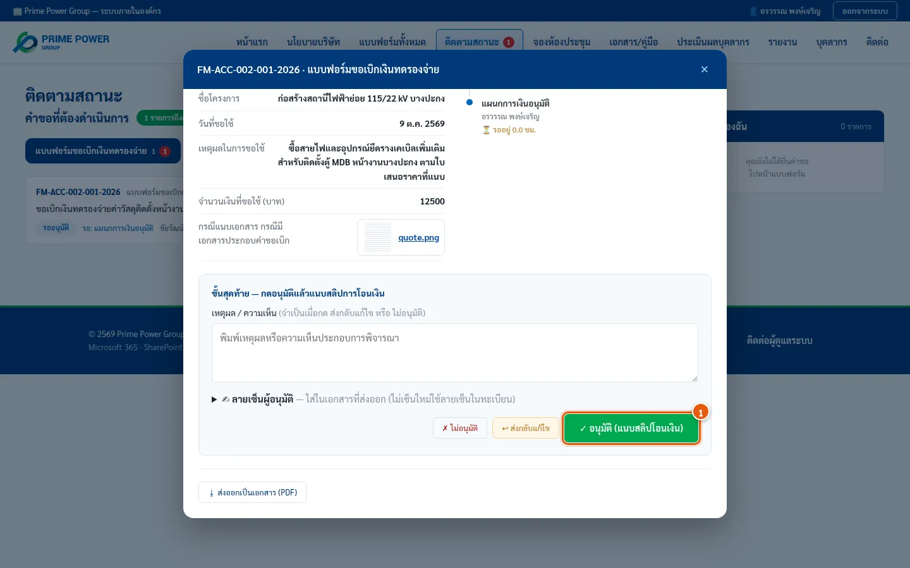
- 1ปุ่มอนุมัติ (แนบสลิปโอนเงิน)
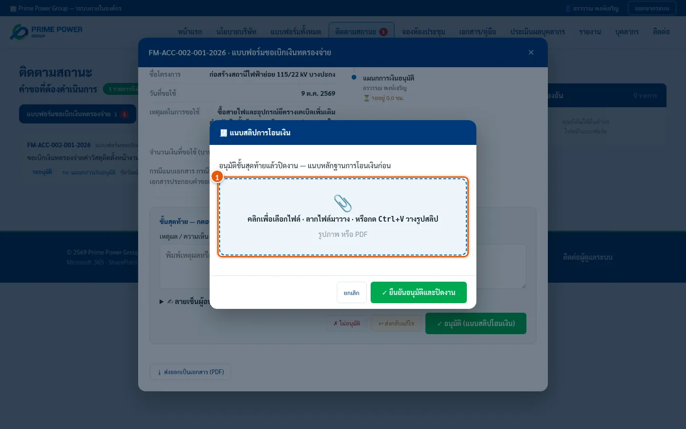
- 1คลิก / ลากไฟล์ / Ctrl+V
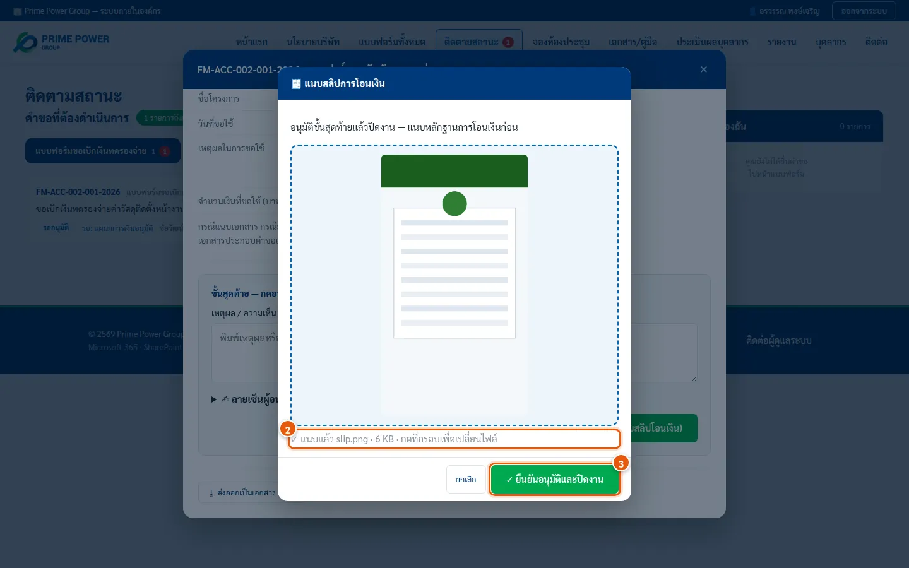
- 2ข้อความยืนยันการแนบ
- 3ยืนยันอนุมัติและปิดงาน
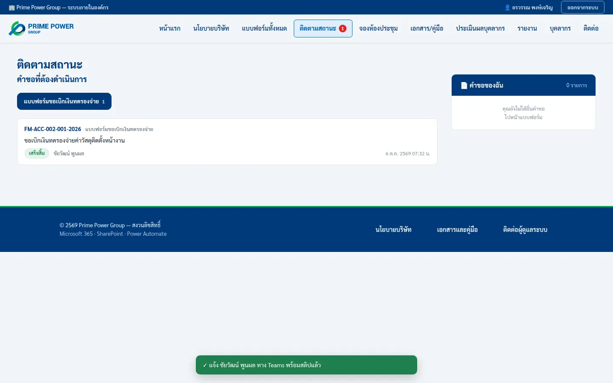
ข้อความ Teams ส่งในนามบัญชีของผู้อนุมัติฝ่ายการเงินถึงผู้ยื่นโดยตรง ผู้ยื่นจะเห็นรูปสลิปในแชตและตอบกลับในแชตนั้นได้ · ถ้าแถบด้านล่างเป็นสีแดง แปลว่าส่ง Teams ไม่สำเร็จ แต่การอนุมัติและปิดงานบันทึกเรียบร้อยแล้ว — แจ้งผู้ยื่นทางอื่นและแจ้งผู้ดูแลระบบ
ถ้ากด ยกเลิก ในหน้าต่างแนบสลิป จะยังไม่อนุมัติ คำขอยังอยู่ที่คุณ
11จองห้องประชุม
ดูตารางการใช้ห้อง แล้วจองจากหน้าเว็บ ระบบสร้างนัดหมายในปฏิทิน Outlook ของคุณและเชิญห้องให้อัตโนมัติ
สถานการณ์
คุณชัยวัฒน์ต้องการประชุมติดตามงานโครงการบางปะกงกับหัวหน้าและเพื่อนร่วมทีม วันที่ 8 ต.ค. เวลา 13:30–15:00 น. โดยมีผู้เข้าร่วมจากหน้างานผ่าน Teams
- เมนู จองห้องประชุม → เลือกห้อง (ดูจำนวนที่นั่งและชั้น)
- ดูตารางด้านล่างว่าเวลาที่ต้องการว่างหรือไม่ (ถ้าตารางไม่ขึ้น กด ↗ เปิดปฏิทินเต็มจอ)
- กรอก หัวข้อการประชุม · วันที่ · เวลา เริ่ม และ ถึง
- ผู้เข้าร่วม ใส่อีเมลคั่นด้วยเครื่องหมายจุลภาค (,) · รายละเอียดเพิ่มเติม (ไม่บังคับ)
- กด 📅 จองห้อง — ครั้งแรกอาจมีหน้าต่าง Microsoft ขออนุญาตเข้าถึงปฏิทิน ให้กดยอมรับ
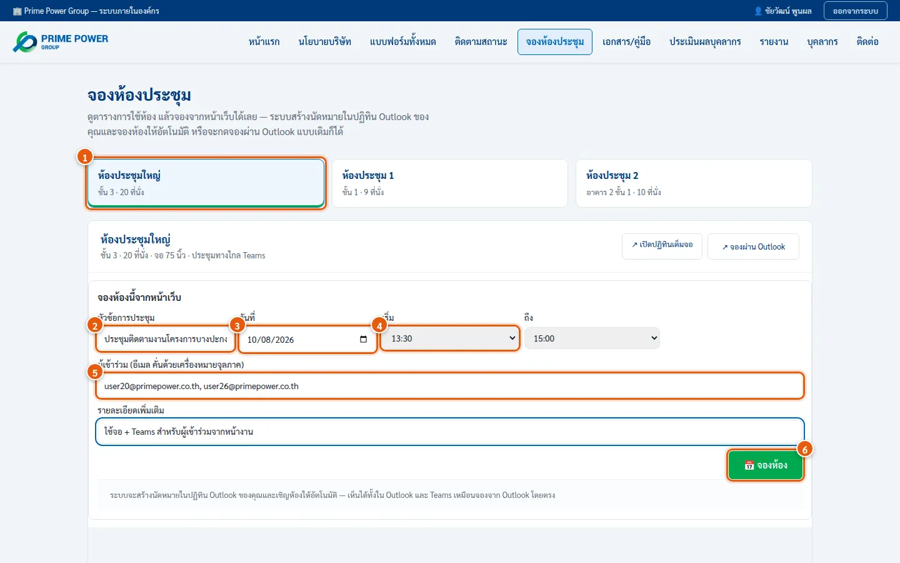
- 1เลือกห้อง
- 2หัวข้อการประชุม
- 3วันที่
- 4เวลาเริ่ม–สิ้นสุด
- 5อีเมลผู้เข้าร่วม
- 6ปุ่มจองห้อง
จะจองผ่าน Outlook แบบเดิมก็ได้ กดปุ่ม ↗ จองผ่าน Outlook · ผู้เข้าร่วมจะได้รับคำเชิญใน Outlook/Teams เหมือนนัดประชุมปกติ ยกเลิก/เลื่อนนัดทำใน Outlook
12เอกสาร / คู่มือ
คู่มือปฏิบัติงาน เอกสาร ISO และไฟล์ต้นแบบสำหรับดาวน์โหลด แยกตามฝ่ายเจ้าของเอกสาร
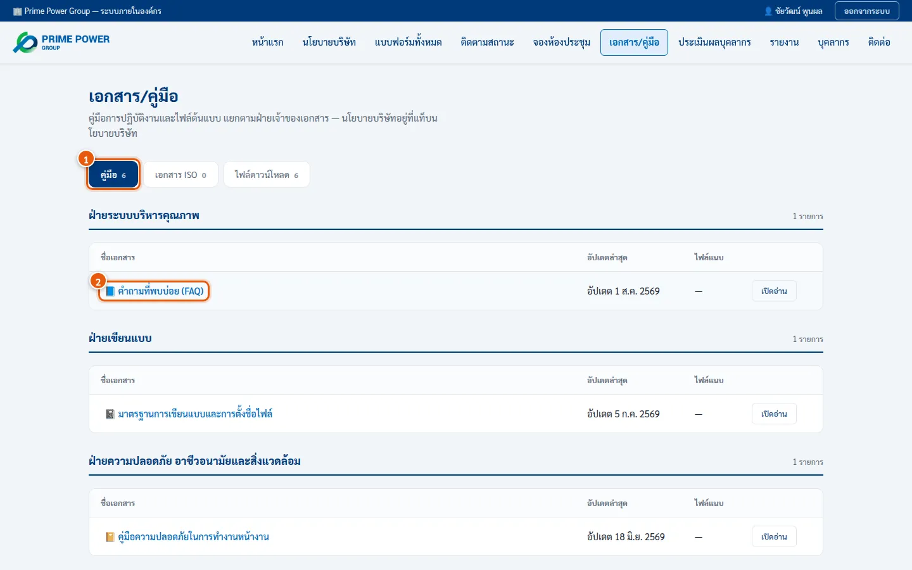
- 1แท็บ คู่มือ · เอกสาร ISO · ไฟล์ดาวน์โหลด (ตัวเลขคือจำนวนรายการ)
- 2กดชื่อเอกสารหรือ “เปิดอ่าน” เพื่อดูเนื้อหาและไฟล์แนบ
นโยบายบริษัทอยู่ที่เมนู นโยบายบริษัท แยกจากหน้านี้ · ถ้าหาเอกสารไม่เจอ ให้ถามฝ่ายเจ้าของเอกสาร
13ประเมินผลบุคลากร
ใช้ประเมินพนักงานทดลองงานและประเมินประจำปี แทนแบบฟอร์มกระดาษ ทุกคนลงนามในระบบ
ลำดับขั้นของใบประเมิน
ขั้นที่ 2 และ 3 ทำพร้อมกันได้ · บางรอบ HR อาจเปิดให้พนักงานประเมินตนเองก่อนหัวหน้า
หัวหน้าประเมินลูกทีม
สถานการณ์
คุณชัยวัฒน์ทำงานครบ 60 วัน ฝ่ายบุคคลเปิดรอบ “ทดลองงาน รอบที่ 1/2569” คุณธีรพงศ์ในฐานะหัวหน้าต้องประเมิน
- เมนู ประเมินผลบุคลากร (มีตัวเลขแดง) → แท็บ ทีมของฉัน
- กด ประเมิน ที่ชื่อลูกทีม
- ตรวจข้อมูลด้านบน: สถานะ ขั้นตอน วันเริ่มงาน วันครบกำหนดแต่ละครั้ง และสถิติการมาทำงาน (มาสาย ขาดงาน ลา)
- ให้คะแนนทุกข้อ 1–10 (10 = ดีมาก) — มีช่องความเห็นรายข้อ (ไม่บังคับ) · กดแถบ 📋 เกณฑ์การให้คะแนน ทางซ้ายของจอเพื่อดูคำอธิบายแต่ละระดับ
- เลื่อนลงไปส่วนลงนาม กรอกความเห็นและเซ็นในช่อง “ผู้ประเมิน”
- กด บันทึกและส่งให้พนักงานรับทราบ / ฝ่ายบุคคล
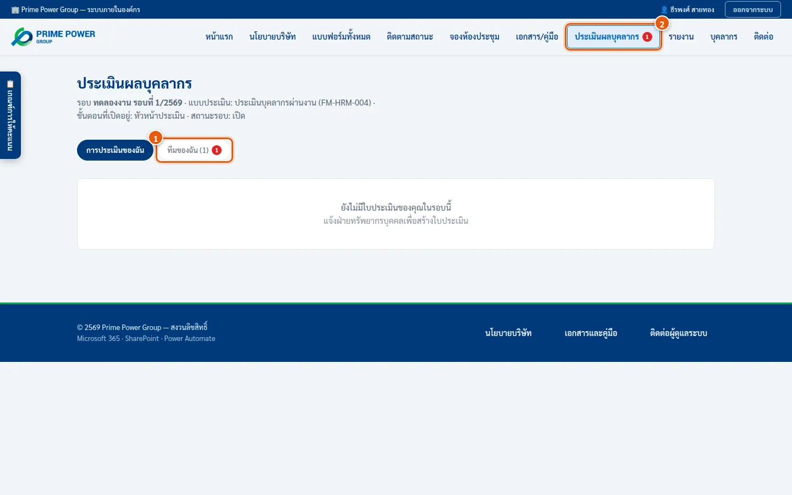
- 1แท็บ ทีมของฉัน (ตัวเลข = ใบที่รอคุณ)
- 2ตัวเลขแดงบนเมนู
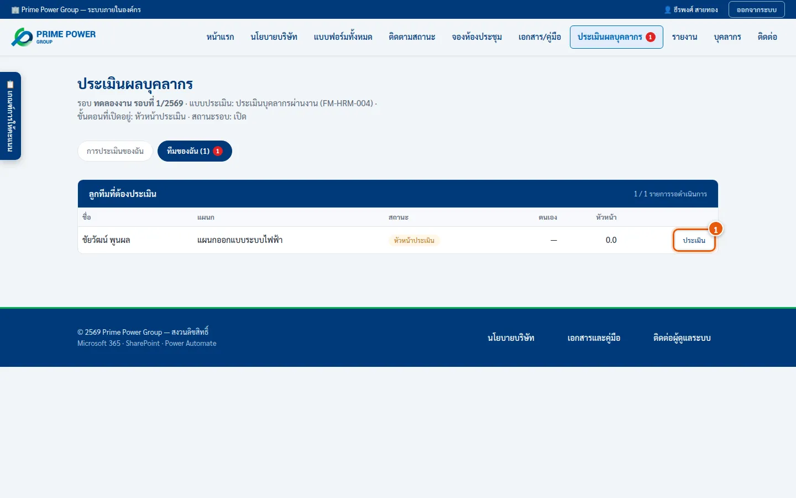
- 1ปุ่มประเมิน
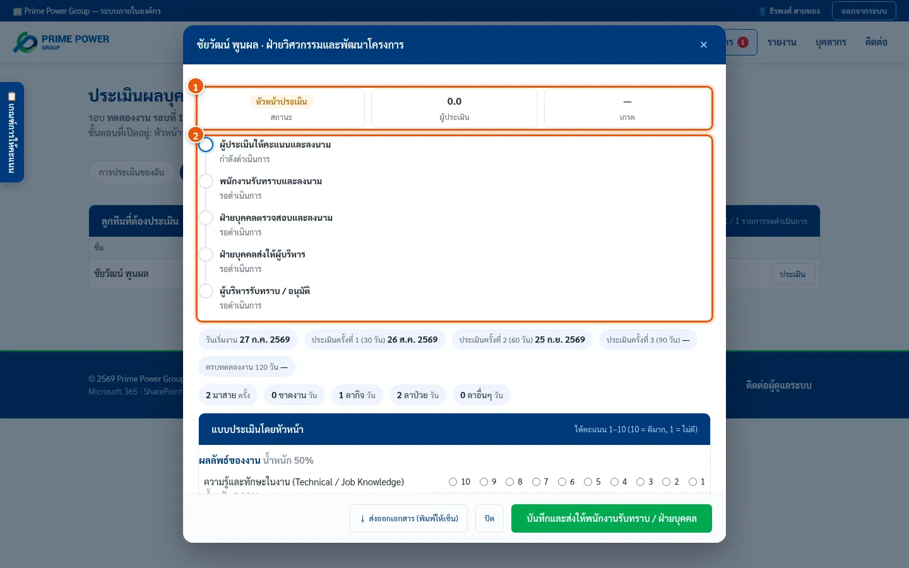
- 1สถานะ คะแนนรวม และเกรด (คำนวณให้อัตโนมัติ)
- 2ขั้นตอนของใบประเมิน — วงกลมน้ำเงิน = ขั้นปัจจุบัน
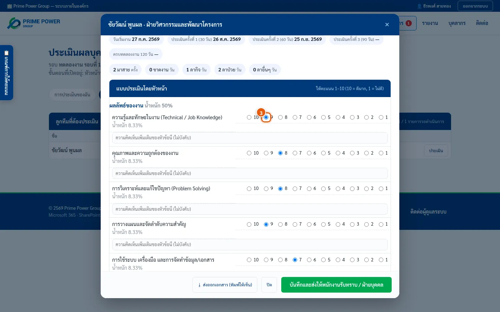
- 3เลือกคะแนนแต่ละข้อ
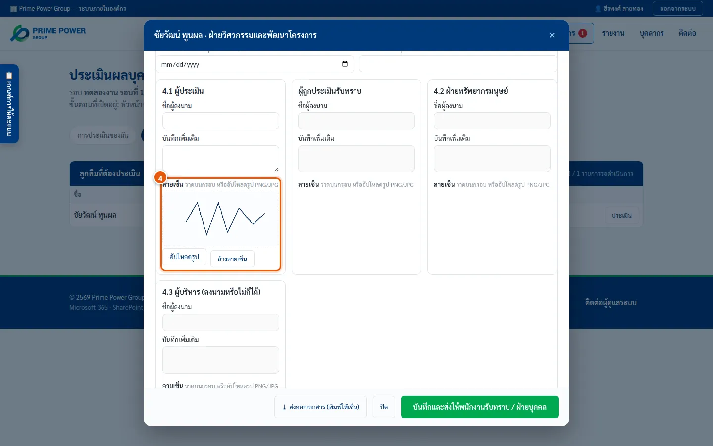
- 4ลายเซ็นผู้ประเมิน
- 5บันทึกและส่ง
เมื่อกดส่งแล้ว คะแนนจะถูกล็อก แก้ไขไม่ได้ ถ้าต้องการแก้ ให้ฝ่ายบุคคลส่งกลับมา
พนักงานรับทราบและลงนาม
- เมนู ประเมินผลบุคลากร → แท็บ การประเมินของฉัน — เห็นคะแนนและเกรดของตนเอง
- กด ✍ เปิดใบเพื่อลงนามรับทราบ
- อ่านผลการประเมินทั้งหมด · กรอก ความเห็นของฉัน (ถ้ามี) · เซ็นในกรอบ หรืออัปโหลดรูปลายเซ็น
- กด ✓ ลงนามรับทราบ
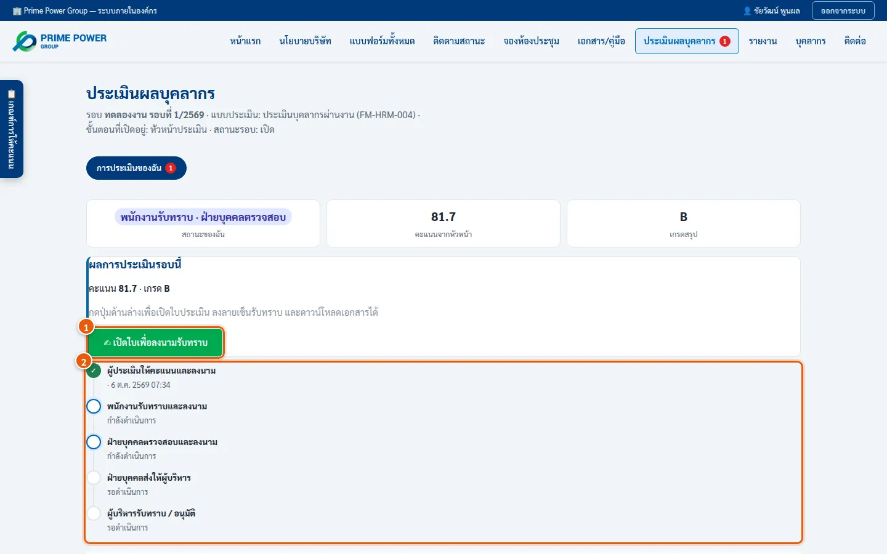
- 1เปิดใบเพื่อลงนามรับทราบ
- 2ขั้นตอนของใบประเมิน
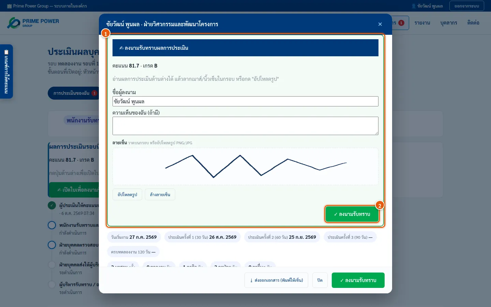
- 1กล่องลงนามรับทราบ — คะแนน เกรด ความเห็น และลายเซ็น
- 2ลงนามรับทราบ
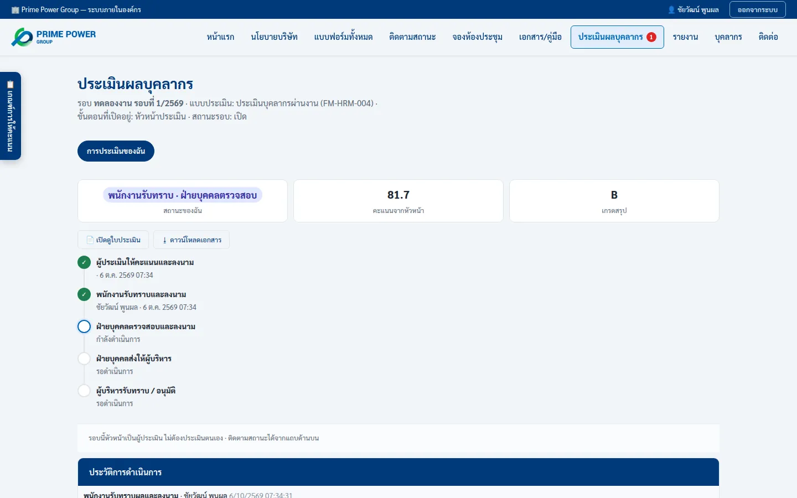
การลงนามรับทราบไม่ได้แปลว่าเห็นด้วยทุกข้อ — ถ้าไม่เห็นด้วย เขียนในช่องความเห็นได้ ฝ่ายบุคคลและผู้บริหารจะเห็น
14บุคลากรและแผนผังองค์กร
ค้นหาเพื่อนร่วมงาน เบอร์ภายใน อีเมล และดูโครงสร้างองค์กร
ค้นหาบุคลากร
- เมนู บุคลากร → พิมพ์ชื่อจริง ชื่อเล่น ชื่ออังกฤษ ตำแหน่ง หรือชื่อฝ่าย/แผนก
- กดการ์ดเพื่อดูข้อมูลเต็มและรูปใหญ่ · กดอีเมลเพื่อเปิดโปรแกรมส่งเมล · กด 📋 เพื่อคัดลอกอีเมล
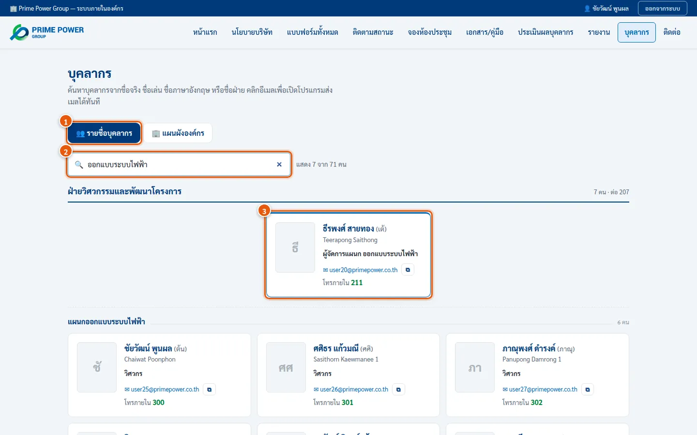
- 1แท็บ รายชื่อบุคลากร / แผนผังองค์กร
- 2ช่องค้นหา
- 3การ์ดบุคลากร — ชื่อ ชื่อเล่น ตำแหน่ง อีเมล เบอร์ภายใน
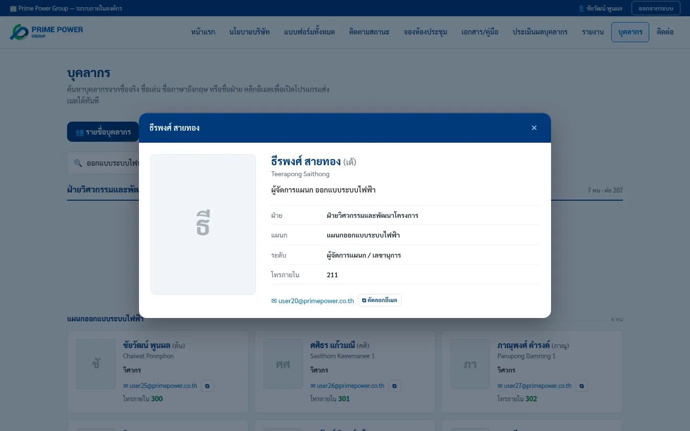
แผนผังองค์กร
แท็บ 🏢 แผนผังองค์กร แสดงผังตามฉบับประกาศของบริษัท กดกล่องฝ่ายหรือแผนกเพื่อดูรายชื่อคนในหน่วยนั้น กดกล่องตำแหน่งผู้บริหารเพื่อดูข้อมูลผู้ดำรงตำแหน่ง บนมือถือเลื่อนซ้าย–ขวาในกรอบเพื่อดูทั้งผัง
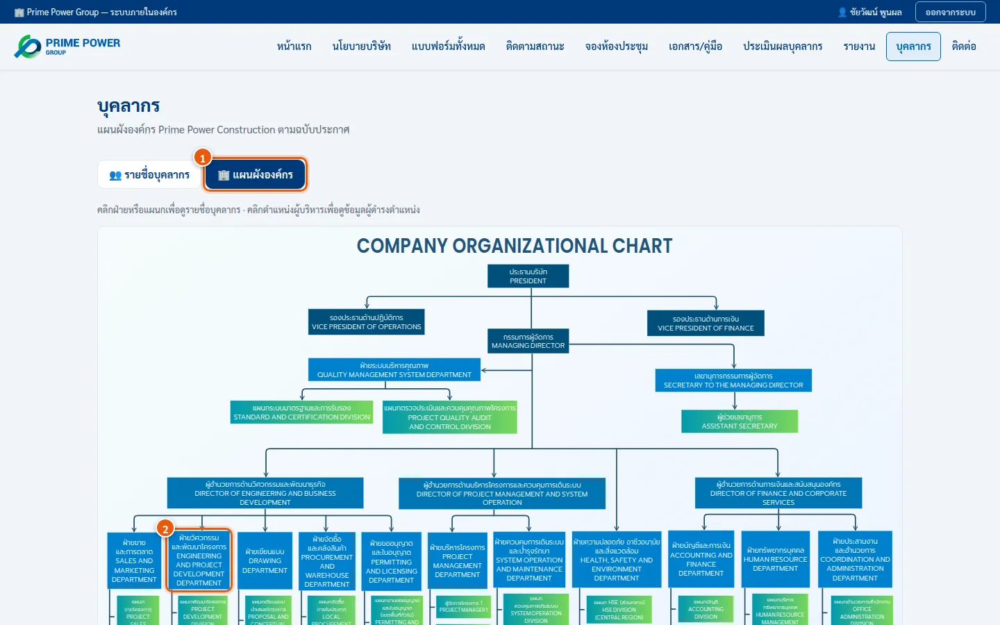
- 1แท็บแผนผังองค์กร
- 2กดกล่องฝ่าย/แผนก
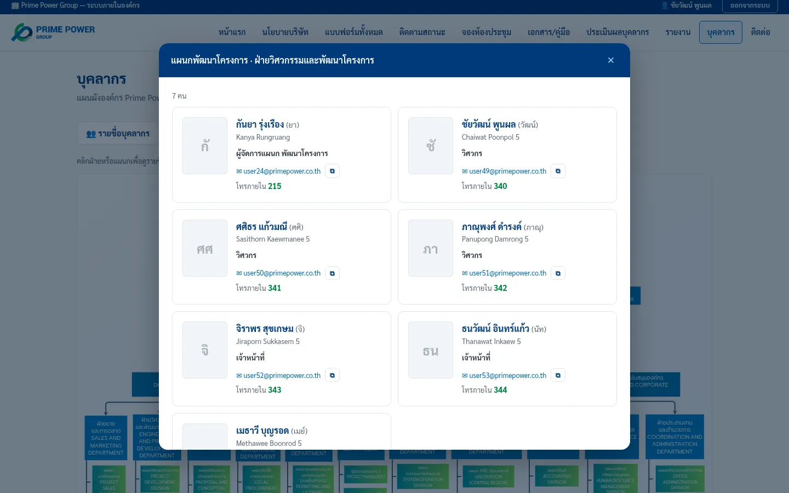
ถ้าข้อมูลของคุณ (ตำแหน่ง เบอร์ภายใน รูป) ไม่ถูกต้อง แจ้งฝ่ายทรัพยากรบุคคลให้แก้ไข
15ติดต่อ / กล่องความคิดเห็น
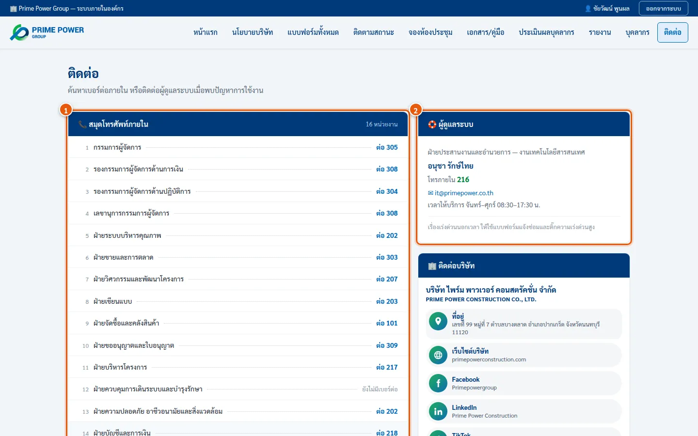
- 1สมุดโทรศัพท์ภายในทุกหน่วยงาน — โทรเข้าเบอร์กลางแล้วกดเบอร์ต่อ
- 2ผู้ดูแลระบบ — ติดต่อเมื่อใช้งานไม่ได้
ส่งความคิดเห็นถึงฝ่ายบริหาร
- เลือก เรื่องที่ต้องการเสนอ
- เล่า รายละเอียด: สถานการณ์ที่เจอ และสิ่งที่อยากให้เปลี่ยน
- ถ้าไม่ต้องการระบุชื่อ ติ๊ก ไม่ต้องการระบุชื่อผู้เสนอ
- กด ส่งความคิดเห็น
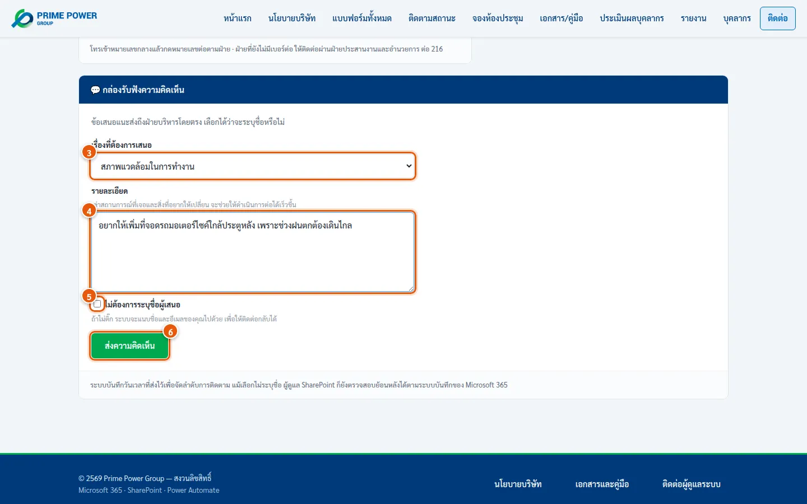
- 3เรื่องที่เสนอ
- 4รายละเอียด
- 5ไม่ระบุชื่อ
- 6ส่ง
16รายงาน
สำหรับหัวหน้าและผู้บริหาร ใช้ดูภาพรวมการใช้งานและจุดที่งานค้าง
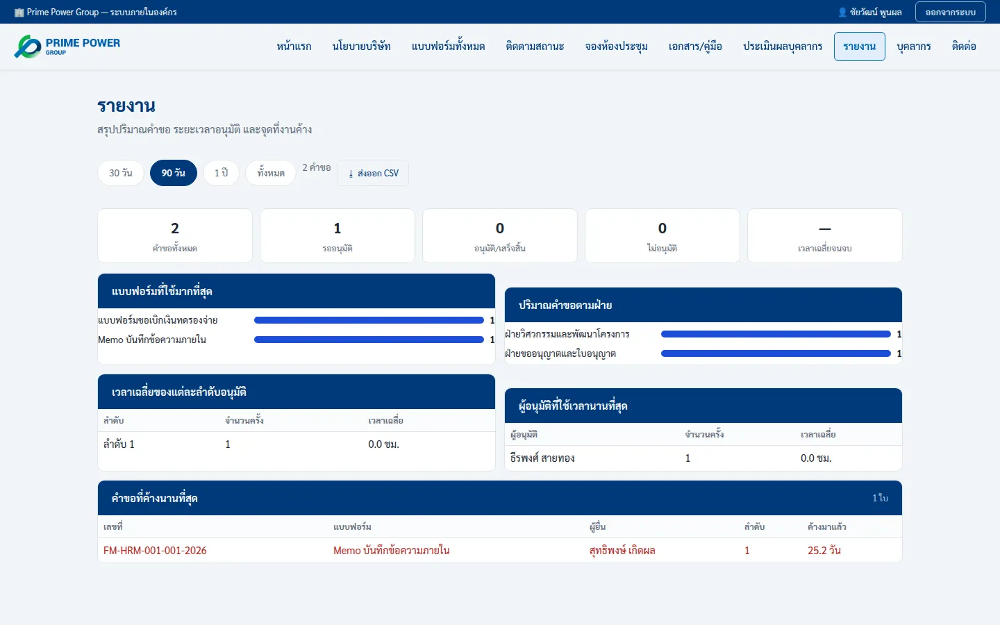
17ใช้งานบนมือถือ
ทุกเมนูใช้บนมือถือได้ เหมาะกับการยื่นคำขอจากหน้างาน อนุมัติระหว่างเดินทาง หรือถ่ายรูปใบเสร็จแนบทันที
- เปิดลิงก์ระบบด้วย Safari (iPhone) หรือ Chrome (Android) แล้วเข้าสู่ระบบเหมือนบนคอม
- เพิ่มไว้ที่หน้าจอหลัก: iPhone กดปุ่มแชร์ → “เพิ่มไปยังหน้าจอโฮม” · Android กด ⋮ → “เพิ่มลงในหน้าจอหลัก” — จะได้ไอคอนเปิดเหมือนแอป
- เมนูอยู่ในปุ่ม ☰ เมนู มุมขวาบน
- ตอนแนบไฟล์ เลือก “ถ่ายรูป” เพื่อถ่ายใบเสร็จได้ทันที · ลายเซ็นใช้นิ้วเซ็นในกรอบ
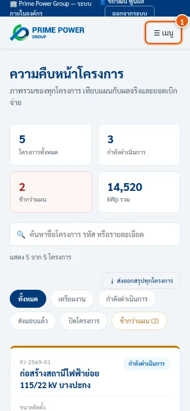
- 1ปุ่มเมนู
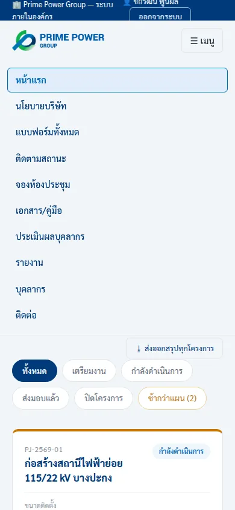
18ปัญหาที่พบบ่อยและวิธีแก้
เข้าสู่ระบบไม่ได้ ขึ้นว่าบัญชีไม่ได้รับอนุญาต
ตรวจว่าใช้อีเมล @primepower.co.th ไม่ใช่อีเมลส่วนตัว ถ้าเป็นพนักงานใหม่ บัญชีอาจยังไม่พร้อม ติดต่อฝ่ายทรัพยากรบุคคล หรือผู้ดูแลระบบ (ต่อ 216)
หน้าเว็บไม่อัปเดต / ไม่เห็นเมนูหรือปุ่มใหม่
กด Ctrl + F5 (Mac: Cmd + Shift + R) เพื่อโหลดหน้าใหม่ทั้งหมด บนมือถือให้ปิดแท็บแล้วเปิดใหม่ หรือลากหน้าจอลงเพื่อรีเฟรช
กดส่งคำขอแล้วไม่ไป ขึ้นข้อความสีแดง
อ่านข้อความ ส่วนใหญ่คือยังไม่ได้กรอกช่องที่มี * ข้อความจะบอกว่า “ยังขาด” ช่องไหน · ถ้าขึ้นว่า SharePoint มีผู้ใช้งานหนาแน่น ให้รอ 1–2 นาทีแล้วกดส่งใหม่ ข้อมูลที่กรอกไว้ยังอยู่
คำขอค้างที่ผู้อนุมัติคนเดิมนานหลายวัน
เปิดคำขอดูเส้นทางอนุมัติ ชื่อผู้อนุมัติที่กำลังรออยู่จะแสดงพร้อมเวลาที่รอ ติดต่อผู้อนุมัติโดยตรง (ดูเบอร์ในเมนูบุคลากร) · ถ้าผู้อนุมัติลาออกหรือเปลี่ยนตำแหน่ง แจ้ง HR ให้แก้ทะเบียนบุคลากร
คำขอไปหาผู้อนุมัติผิดคน
ระบบใช้ข้อมูลในหน้าบุคลากร (หัวหน้า ฝ่าย แผนก) และเส้นทางอนุมัติของแต่ละแบบฟอร์ม แจ้ง HR หรือผู้ดูแลระบบพร้อมเลขที่คำขอ
อนุมัติใน Teams แล้ว แต่ในเว็บยังรออยู่
ปกติใช้เวลาไม่กี่นาที ถ้าเกิน 10 นาที ให้อนุมัติในเว็บแทน และแจ้งผู้ดูแลระบบพร้อมเลขที่คำขอ · ถ้าคุณอนุมัติหลายลำดับ ให้กดการ์ดใบล่าสุด (บทที่ 9)
รูปภาพ / ไฟล์แนบไม่แสดง
กดชื่อไฟล์เพื่อเปิดในแท็บใหม่ ถ้ายังเปิดไม่ได้ ตรวจว่ายังล็อกอินอยู่ หรือกด Ctrl+F5 · ถ้าเป็นทุกไฟล์ แจ้งผู้ดูแลระบบ
ลายเซ็นไม่ขึ้นในเอกสาร
เปิดส่งออกเอกสาร → หัวข้อ ✍ ลายเซ็น → เซ็นใหม่ แล้วกด “ใส่ลายเซ็นนี้ในเอกสาร” · เซ็นด้วยเมาส์ให้กดค้างแล้วลาก บนมือถือใช้นิ้วลากในกรอบ
ถูกออกจากระบบเอง
ระบบออกให้อัตโนมัติเมื่อไม่ได้ใช้งาน 60 นาที เพื่อความปลอดภัย เข้าสู่ระบบใหม่ได้ทันที ข้อมูลที่บันทึก/ส่งไปแล้วไม่หาย (แต่แบบฟอร์มที่กรอกค้างไว้ยังไม่ได้กดส่งอาจหาย)
ไม่เห็นใบประเมินของตัวเอง
ใบประเมินจะขึ้นเมื่อฝ่ายบุคคลเปิดรอบและสร้างใบให้คุณแล้ว ถ้าถึงกำหนดแต่ยังไม่เห็น สอบถามฝ่ายบุคคล
ติดต่อผู้ดูแลระบบ: งานเทคโนโลยีสารสนเทศ ฝ่ายประสานงานและอำนวยการ · โทรภายใน 216 · it@primepower.co.th · จันทร์–ศุกร์ 08:30–17:30 น. — แจ้งเลขที่คำขอ และแคปหน้าจอข้อความที่ขึ้น จะช่วยให้แก้ได้เร็ว
19หลักสูตรอบรมพนักงานใหม่
สำหรับผู้สอน (HR / หัวหน้างาน) ใช้อบรมพนักงานใหม่ในวันแรก ใช้เวลาประมาณ 2 ชั่วโมง
| เวลา | หัวข้อ | บทในคู่มือ |
|---|---|---|
| 15 นาที | แนะนำระบบ เข้าสู่ระบบ อ่านนโยบาย PDPA ออกจากระบบ | เริ่มต้น, 1 |
| 10 นาที | หน้าแรก เมนู ตัวเลขแจ้งเตือน ข่าวประกาศ | 2 |
| 15 นาที | อ่านนโยบายบริษัท และหาคู่มือของฝ่ายตัวเอง | 3, 12 |
| 30 นาที | ฝึกปฏิบัติ: ยื่นคำขอ ติดตามสถานะ แก้ไขเมื่อถูกส่งกลับ ส่งออก PDF | 4, 5, 6, 7 |
| 10 นาที | จองห้องประชุม | 11 |
| 15 นาที | ประเมินผลบุคลากร (มุมมองพนักงาน) · ค้นหาบุคลากรและแผนผังองค์กร | 13, 14 |
| 10 นาที | ใช้บนมือถือ เพิ่มไอคอนที่หน้าจอหลัก · ปัญหาที่พบบ่อย | 17, 18 |
| 15 นาที | ทำแบบทดสอบ และตรวจเช็กลิสต์ | 20 |
สำหรับหัวหน้างานใหม่ เพิ่ม 30 นาที: การอนุมัติในเว็บและใน Teams (บทที่ 8–9) · การประเมินลูกทีม (บทที่ 13) · รายงาน (บทที่ 16) · สำหรับฝ่ายการเงิน: การแนบสลิปและปิดงาน (บทที่ 10)
แบบฝึกปฏิบัติ
แบบฝึกที่ 1 — ยื่นคำขอ
ยื่น Memo บันทึกข้อความภายใน เรื่อง “ทดสอบการใช้งานระบบ – ชื่อของคุณ” แนบรูปถ่ายใดก็ได้ 1 รูป และลงลายเซ็น → จดเลขที่คำขอที่ได้
แบบฝึกที่ 2 — ติดตามและแก้ไข
ผู้สอน (ในฐานะผู้อนุมัติ) กด “ส่งกลับแก้ไข” พร้อมเหตุผล → ผู้เรียนเปิดดูเหตุผล แก้ชื่อเรื่องเป็น “ทดสอบการใช้งานระบบ (แก้ไขแล้ว)” แล้วยื่นใหม่ → เมื่อผ่านแล้วให้ส่งออกเป็น PDF
แบบฝึกที่ 3 — ค้นหาข้อมูล
หาเบอร์ต่อของฝ่ายทรัพยากรบุคคล · หาชื่อหัวหน้าแผนกของตนเองในแผนผังองค์กร · เปิดนโยบายคุ้มครองข้อมูลส่วนบุคคล (PDPA) แล้วบอกวันที่ประกาศ
หลังอบรม ผู้สอนควรยกเลิกคำขอทดสอบ เพื่อไม่ให้ปนกับข้อมูลจริงในรายงาน
เช็กลิสต์พนักงานใหม่ (สัปดาห์แรก)
- เข้าสู่ระบบด้วยบัญชี @primepower.co.th ได้ และเห็นชื่อตัวเองมุมขวาบน
- อ่านนโยบายความเป็นส่วนตัว (PDPA) และนโยบายบริษัทครบทุกฉบับ
- ตรวจข้อมูลตัวเองในเมนูบุคลากร (ฝ่าย แผนก ตำแหน่ง เบอร์ต่อ รูป) ถูกต้อง
- รู้ชื่อหัวหน้าโดยตรง และหาเบอร์ต่อของ HR และผู้ดูแลระบบได้
- ยื่นคำขอทดสอบ ติดตามสถานะ และส่งออก PDF ได้
- เพิ่มไอคอนระบบไว้ที่หน้าจอหลักของมือถือ
- เปิดแอป Teams → Approvals ได้ (สำหรับหัวหน้า)
- ทำแบบทดสอบได้อย่างน้อย 8 จาก 10 ข้อ
20แบบทดสอบหลังอบรม
10 ข้อ ผ่านเกณฑ์ 8 ข้อ — ทำเสร็จแล้วกดดูเฉลยด้านล่าง
- เข้าสู่ระบบ Intranet ต้องใช้บัญชีใด ก. Gmail ส่วนตัว ข. บัญชี Microsoft 365 @primepower.co.th ค. รหัสพนักงาน ง. Line
- ตัวเลขวงกลมสีแดงบนเมนู “ติดตามสถานะ” หมายถึงอะไร ก. จำนวนคำขอทั้งหมดของบริษัท ข. คำขอที่รอคุณอนุมัติหรือคำขอของคุณที่มีความเคลื่อนไหว ค. ข่าวใหม่ ง. ข้อผิดพลาดของระบบ
- ช่องที่มีเครื่องหมาย * สีแดงในแบบฟอร์มหมายถึงอะไร ก. ช่องที่ไม่ต้องกรอก ข. ช่องที่ต้องกรอก ค. ช่องที่ผู้อนุมัติกรอก ง. ช่องที่ระบบกรอกให้
- คำขอถูก “ส่งกลับแก้ไข” ควรทำอย่างไร ก. ยื่นแบบฟอร์มใหม่ทั้งหมด ข. อ่านเหตุผล แล้วกด “แก้ไขและยื่นใหม่” ค. รอให้ผู้อนุมัติแก้ให้ ง. ยกเลิกคำขอทันที
- ความเห็นของผู้อนุมัติแสดงในรูปแบบใด ก. ไม่แสดงให้ผู้ยื่นเห็น ข. กรอบสีแดงใต้ชื่อผู้อนุมัติในเส้นทางอนุมัติ ค. ส่งทางอีเมลเท่านั้น ง. แสดงในหน้าแรก
- ผู้อนุมัติสามารถอนุมัติได้ทางใดบ้าง ก. เว็บ Intranet เท่านั้น ข. Teams เท่านั้น ค. ทั้งเว็บ Intranet และ Teams → Approvals ง. Line
- การเงินแนบสลิปได้ด้วยวิธีใด ก. เลือกไฟล์ ข. ลากไฟล์มาวาง ค. Ctrl+V วางรูปที่แคปไว้ ง. ถูกทุกข้อ
- เมื่อการเงินปิดงานแล้ว ผู้ยื่นจะรู้ได้อย่างไร ก. ไม่มีการแจ้ง ข. ข้อความ Teams พร้อมรูปสลิป และตัวเลขแดงบนเมนูติดตามสถานะ ค. จดหมาย ง. โทรศัพท์เท่านั้น
- ถ้าไม่ได้ใช้งานระบบนานเท่าไร ระบบจะออกจากระบบอัตโนมัติ ก. 5 นาที ข. 15 นาที ค. 60 นาที ง. ไม่ออกเลย
- หน้าเว็บไม่อัปเดตหรือไม่เห็นปุ่มใหม่ ควรทำอะไรก่อน ก. ติดตั้งเครื่องใหม่ ข. กด Ctrl + F5 เพื่อโหลดหน้าใหม่ ค. ใช้บัญชีคนอื่น ง. ส่งคำขอซ้ำ
ดูเฉลย
1. ข · 2. ข · 3. ข · 4. ข · 5. ข · 6. ค · 7. ง · 8. ข · 9. ค · 10. ข
21คำศัพท์ในระบบ
| คำ | ความหมาย |
|---|---|
| เลขที่คำขอ | รหัสอ้างอิงของคำขอ เช่น FM-ACC-002-001-2026 = รหัสแบบฟอร์ม + ลำดับ + ปี ค.ศ. |
| เส้นทางอนุมัติ | ลำดับผู้อนุมัติของแต่ละแบบฟอร์ม เช่น ผู้บังคับบัญชา → ผู้บริหาร → การเงิน |
| ผู้บังคับบัญชา | หัวหน้าโดยตรงของผู้ยื่น ตามที่ระบุในทะเบียนบุคลากร |
| ส่งกลับแก้ไข | ผู้อนุมัติคืนคำขอให้ผู้ยื่นแก้ไข แล้วเริ่มอนุมัติใหม่จากลำดับแรก |
| ปิดงาน / เสร็จสิ้น | คำขอผ่านครบและดำเนินการเรียบร้อย เช่น โอนเงินแล้ว |
| เงินทดรองจ่าย | เงินที่เบิกล่วงหน้าเพื่อใช้ในงานที่ได้รับมอบหมาย แล้วเคลียร์ด้วยใบเสร็จภายหลัง |
| เงินสำรองโครงการ | เงินสำรองสำหรับซื้อของใช้หน้างานตามงวดงานของโครงการ |
| Teams Approvals | แอปอนุมัติใน Microsoft Teams ที่ระบบส่งการ์ดขออนุมัติไปให้ |
| รอบการประเมิน | ช่วงเวลาที่ฝ่ายบุคคลเปิดให้ประเมิน เช่น ทดลองงาน 30/60/90/120 วัน หรือประจำปี |
| ลงนามรับทราบ | พนักงานยืนยันว่าได้อ่านผลการประเมินแล้ว (ไม่ได้แปลว่าเห็นด้วยทุกข้อ) |
| PDPA | พระราชบัญญัติคุ้มครองข้อมูลส่วนบุคคล พ.ศ. 2562 |
© 2569 Prime Power Group · คู่มือการใช้งานระบบ Intranet ฉบับที่ 1.0 · ภาพประกอบใช้ข้อมูลตัวอย่าง